- \(S_{xx} = \sum x_i^2 - n\bar{x}^2\) and \(S_{xy} = \sum x_i y_i - n\bar{x}\bar{y}\)
- \(\hat{\beta}_1 = S_{xy}/S_{xx}\) and \(\hat{\beta}_0 = \bar{y} - \hat{\beta}_1 \bar{x}\)
Chapter 9 Simple Linear Regression
9.1 Introduction to the Linear Model
A linear model is a function the form
\[y_i = \beta_0 + \beta_1 x_{i1} + \beta_2 x_{i2} + \ldots + \beta_p x_{ip} + \varepsilon_i, \quad \varepsilon_i \sim N(0, \sigma^2)\]
where \(y\) is the response (also called the outcome or dependent) variable, \((x_{i1},\dots,x_{ip})\) are the predictors (also called explanatory or independent variables or covariates) and \(\varepsilon_i\) is random error. In practice, the aim of constructing a linear model is usually prediction using the \(x_{ij}\) to predict \(y\), and to conduct statistical inference to assess whether \(y\) is related to the predictors, such as testing for association. In this mode, \(x_{ij}\) are assumed fixed, \(y_i\) are random and the error terms \(\varepsilon_i\) is independent Gaussian noise with a constant variance \(\sigma^2\). The coefficients \(\beta_0, \ldots, \beta_p\) are fixed but unknown constants.
A simple linear regression (SLR) model is a linear regression model with just 1 predictor and it has the form
\[y_i = \beta_0 + \beta_1 x_{i} \varepsilon_i, \quad \varepsilon_i \sim N(0, \sigma^2).\]
9.1.1 Least Squares Method
The method of least squares is an optimization technique used to calculate the coefficients \(\beta_0, \ldots, \beta_p\) in regression analysis. Its goal is to determine the parameters of a candidate model that make the model’s predictions as close as possible to the observed data based on some minimization criteria.
An important definition which is used in evaluating the fit of a model is the following
Definition 9.1 (Residual) A residual (\(e_{i}\)) is the distance between an observed data point \(y_i\) and a fitted value from a regression model \(\hat{y}_{i}\). \[ \begin{aligned} \text{residual} & = (\text{observed data point}) - (\text{fitted value}) \\ e_{i} & = y_{i} - \hat{y}_{i} \end{aligned} \]
The data points \((x_{i1},\dots,x_{ip}, y_{i})\) are observed values. To calculate a residual for an observed \(y_{i}\), we would plug in the \(x_{i1},\dots,x_{ip}\) values for this measurement into the model to evaluate the corresponding \(\hat{y}_{i}\). Once we have this value, we can evaluate the residual as the difference \(e_{i} = y_{i} - \hat{y}_{i}\).
Given a sample of \(n\) observations, we consider the sum of the square distances between each observed \(y_i\) and corresponding predicted \(\hat{y}_i\) (i.e. the sum of the square residuals) which is given by the model. This quantity which we minimize to find the model of best fit is called the Sum of Square Errors (SSE): \[ \begin{align} \mathrm{SSE} &= \sum_{i=1}^n e_{i}^2 \\ &= \sum_{i=1}^n \big(y_i - \hat y_i\big)^2 \\ &= \sum_{i=1}^n \bigl(y_i - (\beta_0 + \beta_1 x_{i1} + \cdots + \beta_p x_{ip})\bigr)^2. \end{align} \] The goal of the least‑squares technique is to find \(\beta_0,\dots,\beta_p\) such that the SSE is as small as possible. This can formally be written as:
\[ \begin{align} & \text{solve}\quad \min_{\beta_0,\beta_1,\dots,\beta_p}\; \frac{1}{2}\sum_{i=1}^{n}\left(y_i - \beta_0 - \sum_{j=1}^{p}\beta_j x_{ij}\right)^2\\ & \text{such that}\quad \beta_0,\dots,\beta_p \in \mathbb{R}. \end{align} \] This can also be represented in vector-matrix form as
\[ \begin{align} & \text{solve}\quad \min_{\beta\in\mathbb{R}^{p+1}} \;\frac{1}{2}\,(y - X\beta)^{\!\top}(y - X\beta) \\ & \text{such that}\quad \beta \in \mathbb{R}^{p+1}. \end{align} \] where \[ \begin{align*} &\textbf{y}\in\mathbb{R}^{n}\ \text{is a response vector }(y_1,\dots,y_n)^{\top}.\\ &\textbf{X}\in\mathbb{R}^{n\times(p+1)}\ \text{is a design matrix }[\,\mathbf{1}\ \ x_1\ \ \cdots\ \ x_p\,],\ \text{with first column of ones (intercept)}.\\ &\boldsymbol{\beta}\in\mathbb{R}^{p+1}\ \text{is a vector if parameters }(\beta_0,\beta_1,\dots,\beta_p)^{\top}.\\ \end{align*} \] Using matrix calculus, we can show the solution for the least squares optimization problem is
\[ \hat{\beta} = (X^{\top}X)^{-1} X^{\top} y \]
The resulting fitted values take the form \[ \hat y_i \;=\; \hat\beta_0 + \hat\beta_1\,x_{i1} + \cdots + \hat\beta_p\,x_{ip}. \]
Here, \(\hat\beta_0\) is the intercept which is the predicted value of \(y\) when \(x_{i1}, \ldots, x_{ip}\) are all 0, and each \(\hat\beta_j\) for \(j=1,\dots,p\) is the change in the expected response for a one‑unit increase in the corresponding predictor with all other predictor values held fixed.
In this course, we will focus on the simplest nontrivial case of a single predictor \[ \hat{y} \;=\; \beta_0 + \beta_1\,x, \] where \(\beta_0\) and \(\beta_1\) denote the intercept and slope of the fitted line.
9.1.2 Estimating Parameters for the Simple Linear Model
Let \((x_1, y_1), (x_2, y_2), \ldots, (x_n, y_n)\) be pairs of observed data points for independent variable \(x\) and dependent variable \(y\). Suppose we plot these points on coordinate axes (See Figure 9.1).
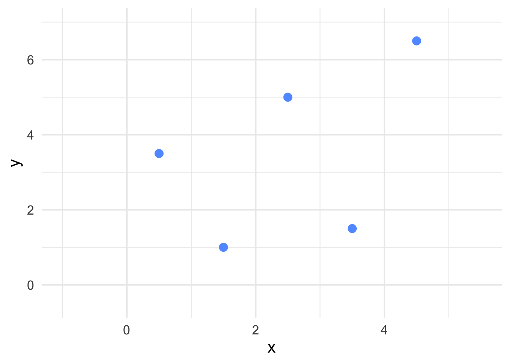
Figure 9.1: Example of points plotted on coordinate axes.
Our goal is to find the line of best fit for these points. The line of best fit will be of the form \[ \hat{y} = \hat{\beta}_{0} + \hat{\beta}_{1}x \] where \(\hat{y}\) represents all fitted points on the line, \(x\) is a value we can input into calculate a predicted \(\hat{y}\), \(\hat{\beta}_0\) is the estimate of the intercept and \(\hat{\beta}_1\) is the estimate of the slope (See Figure 9.2).

Figure 9.2: The line of best fit has now been superimposed on the points in Figure 9.1.
Recall in Section 9.1.1 that we discussed that the technique used to determine the line of best fit is to minimize the sum the squared distances between the observed \(y_{i}\)’s from our data and the fitter \(\hat{y}_{i}\)’s which are predicted from the line (See Figure 9.3).
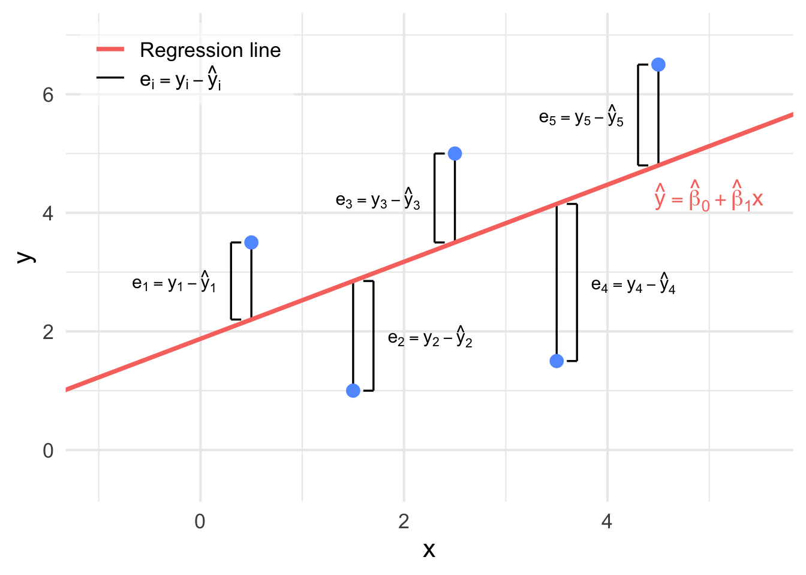
Figure 9.3: The distances between each observed \(y_i\) and fitted \(\hat{y}_{i}\) from Figure 9.2.
The square error (SSE) for the simple linear regression model is
\[ \begin{aligned} \mathrm{SSE} &= \sum_{i=1}^{n} (y_i - \hat{y}_{i})^2\\ &= \sum_{i=1}^{n} \big(y_i - (\hat{\beta}_0 + \hat{\beta}_1x_i) \big)^2. \end{aligned} \] The find the values of \(\hat{\beta}_0\) and \(\hat{\beta}_1\) which minimizes the SSSE, we take the partial derivatives of the SSE with respect to \(\hat{\beta}_0\) and \(\hat{\beta}_1\), setting the expression to 0 and solving for each term, we obtain
Definition 9.2 For a model of the form \(y = \beta_{0} + \beta_{1}x + \varepsilon, \, \varepsilon \sim N(0, \sigma^2)\), the least square estimates for \(\beta_{0}\) and \(\beta_{1}\) are given by \[ \begin{aligned} \hat{\beta}_1 &= \frac{SS_{xy}}{SS_{xx}} = \frac{\displaystyle\sum_{i=1}^{n} (x_i - \bar{x})(y_i - \bar{y}) }{ \displaystyle\sum_{i=1}^{n} (x_i - \bar{x})^2 } = \frac{\displaystyle\sum_{i=1}^{n}x_iy_i - n\bar{x}\bar{y}}{\displaystyle\sum_{i=1}^{n}x_i^2 - n\bar{x}^2}\\ \hfill\\ \text{and}\\ \hfill\\ \hat{\beta}_0 &= \bar{y} - \hat{\beta}_1\bar{x} \end{aligned} \]
Example 9.1 Suppose an appliance store conducts a 5-month experiment to determine the effect of advertising on sales revenue. The results are shown in a table below. The relationship between sales revenue, \(y\), and advertising expenditure, \(x\), is hypothesized to follow a first-order linear model, that is, \(y = \beta_0 + \beta_1\cdot x + \varepsilon\), where \(y =\) dependent variable, \(x =\) independent variable, \(\beta_0\) y-intercept, \(\beta_1 =\) slope of the line and \(\varepsilon =\) error variable.
| Day | Number of tools (X) | Electricity costs (Y) |
|---|---|---|
| 1 | 7 | 23.80 |
| 2 | 3 | 11.89 |
| 3 | 2 | 15.89 |
| 4 | 5 | 26.11 |
| 5 | 8 | 31.79 |
| 6 | 11 | 39.93 |
| 7 | 5 | 12.27 |
| 8 | 15 | 40.06 |
| 9 | 3 | 21.38 |
| 10 | 6 | 18.65 |
a) Obtain the least squares estimates of \(\beta_0\) and \(\beta_1\), and state the estimated regression function.
b) Plot the estimated regression function and the data.
Solution:
a) \(\bar{x} = 3\), \(\bar{y} = 2\), \(S_{xx} = 10\), \(S_{xy} = 7\)
Then, the slope of the least squares line is \(\hat{\beta}_1 = \frac{S_{xy}}{S_{xx}} = 0.7\) and \(\hat{\beta}_0 = \bar{y} - \hat{\beta}_1\bar{x} = -0.1\). Thus, the least squares line is \(\hat{y} = -0.1 + 0.7x\).
b) R-code
plot(x, y, main="Scatterplot: Simple Linear Regression",
xlab="x", ylab="y", pch=19,col="blue");
abline(coef(linear.reg), col="red",lty=2);Remark.
The distinction between explanatory and response variables is essential in Least Squares Method.
The least-squares line (trendline) always passes through the point (\(\bar{x}\), \(\bar{y}\)) on the graph of \(y\) against \(x\).
The square of the correlation, \(r^2\), is the fraction of the variation in the values of \(y\) that is explained by the variation in \(x\).
Example 9.2 A tool die maker operates out of a small shop making specialized tools. He is considering increasing the size of his business and needs to know more about his costs. One such cost is electricity, which he needs to operate his machines and lights. He keeps track of his daily electricity costs and the number of tools that he made that day. These data are listed next. Determine the fixed and variable electricity costs using the Least Squares Method.
| Day | Number of tools (X) | Electricity costs (Y) |
|---|---|---|
| 1 | 7 | 23.80 |
| 2 | 3 | 11.89 |
| 3 | 2 | 15.89 |
| 4 | 5 | 26.11 |
| 5 | 8 | 31.79 |
| 6 | 11 | 39.93 |
| 7 | 5 | 12.27 |
| 8 | 15 | 40.06 |
| 9 | 3 | 21.38 |
| 10 | 6 | 18.65 |
Solution:
Step 1: Entering Data;
tools=c(7,3,2,5,8,11,5,15,3,6);
cost=c(23.80,11.89,15.98,26.11,31.79, 39.93,12.27,40.06,21.38,18.65);Step 2: Finding Slope;
Sx=sd(tools);
Sy=sd(cost);
r=cor(tools,cost);
b1=r*(Sy/Sx);
b1;
## [1] 2.245882Step 3: Finding \(y\)-intercept;
x.bar=mean(tools);
y.bar=mean(cost);
b0=y.bar - b1*x.bar;
b0;
## [1] 9.587765We can also use R-code to draw a graph:
plot(tools,cost,pch=19);
abline(least.squares$coeff,col="red");
# pch=19 tells R to draw solid circles;
# abline tells R to add trendline;Interpretation:
The slope measures the marginal rate of change in the dependent variable. In this example, the slope is \(2.25\), which means that in this sample, for each one-unit increase in the number of tools, the marginal increase in the electricity cost is \(\$ 2.25\) per tool.
The \(y\)-intercept is \(9.57\); that is, the line strikes the \(y\)-axis at \(9.57\). However, when \(x = 0\), we are producing no tools and hence the estimated fixed cost of electricity is \(\$9.57\) per day .
9.1.3 Measures of Linear Relationship
We begin be introducing a quantitaive measurement to measure the linear relationship between variavles
Covariance (Sample Covariance)
In probability theory and statistics, covariance is a measure of the joint variability of two random variables. The covariance sign shows the direction of the linear relationship between two variables. If higher values of one variable tend to occur with higher values of the other (and lower with lower), the covariance is positive, meaning the variables move in the same direction. If higher values of one variable tend to occur with lower values of the other, the covariance is negative, meaning they move in opposite directions. The size (magnitude) of the covariance reflects how much the two variables vary together, based on the variances they share.
Definition 9.3 The sample covariance for 2 variables \(X\) and \(Y\) is: \[s_{xy} = \frac{1}{n-1} \cdot \sum_{i=1}^{n} (x_i - \bar{x})(y_i - \bar{y}) = \frac{\sum_{i = 1}^{n}x_i \cdot y_i}{n -1} - \frac{n\bar{x}\bar{y}}{n-1}.\] These are the two ways to compute covariance. Both will give you the same answer.
The covariance is a measures of how two variables move together.
If covariance of two random variables is greater than \(0\), (\(cov(x,y) > 0\)), then the two random variables show the same trend. That is: if one random variable is increasing, then the other one is also increasing; while if one random variable is decreasing, then the other one is also decreasing.
If covariance of two random variables is less than \(0\), (\(cov(x,y) < 0\)), then the two random variables show the opposite trend. That is: if one random variable is increasing, then the other one is decreasing; while if one random variable is decreasing, then the other one is increasing.
If covariance of two random variables is equal to \(0\), (\(cov(x,y) = 0\)), then we say that there is no relationship (systematically linear) between the two random variables.
Note that covariance is not standardized, so it can be difficult to interpret directly.
Coefficient of Correlation
In statistics, correlation or dependence is any statistical relationship, whether causal or not, between two random variables or bivariate data. It helps us understand whether and how changes in one variable are associated with changes in another. A positive correlation means that as one variable increases, the other tends to increase as well, while a negative correlation means that one variable tends to decrease as the other increases. The degree of correlation is usually expressed with a correlation coefficient, which ranges from \(-1\) to \(+1\).
Definition 9.4 The coefficient of correlation is given by: \[r_{xy} = \frac{s_{xy}}{s_x \cdot s_y}.\] where
\(r_{xy}\) , is the sample correlation coefficient;
\(s_{xy}\) , is the sample covariance;
\(s_{x}\) , is the sample standard deviation of \(x\);
\(s_{y}\) , is the sample standard deviation of \(y\).
The correlation r measures the strength and direction of the linear association between two quantitative variables \(x\) and \(y\). Although you calculate a correlation for any scatter plot, \(r\) measures only straight-line relationships. In short, coefficient of correlation is a measure of the strength of the linear relationship between two random variables.
- If \(r_{xy} \approx +1\), then we say that the two random variables have strong positive correlation (See Figure 9.4).
Figure 9.4: An illustration of strong negative correlation (\(r_{xy} \approx +1\)).
- If \(r_{xy} \approx -1\), then we say that the two random variables have strong negative correlation. (See figure 9.5)
Figure 9.5: An illustration of strong negative correlation (\(r_{xy} \approx -1\)).
- If \(r_{xy} \approx 0\), then we say that there is essentially no correlation between the two random variables. Note that if \(r \approx 0\), then it suggests a linear relationship doesn’t exist but other relationship may exist (See Figure 9.6).
Figure 9.6: An illustration of no correlation (\(r_{xy} \approx 0\)).
The interactive plot below allows us to examine the spatial arrangement of data and the resulting correlation.
Note that correlation doesn’t imply causation:
\(cor(x,y) \approx +1\) doesn’t necessarily imply on increase in \(x\) causes increase in \(y\).
\(cor(x,y) \approx -1\) doesn’t necessarily imply on increase in \(x\) causes decrease in \(y\).
Properties of Covariance and Correlation
These two values are symmetric:
\(cov(x,y) = cov(y,x)\);
\(cor(x,y) = cor(y,x)\).
Example 9.3 Five observations taken for two variables follow.
| \(x_i\) | \(y_i\) |
|---|---|
| 4 | 50 |
| 6 | 50 |
| 11 | 40 |
| 3 | 60 |
| 16 | 30 |
Compute the sample covariance.
Compute and interpret the sample correlation coefficient.
Solution:
Step 1: Compute \(\bar{x}\) and \(\bar{y}\); \(\bar{x} = 8\) and \(\bar{y} = 46\) (check this by yourself).
Step 2: Find \(s_x\) and \(s_y\).
\[s_x^2 = \frac{1}{5-1} \cdot \sum_{i = 1}^{5}(x_i - \bar{x})^2 = 29.5 \text{ and } s_y^2 = \frac{1}{5-1} \cdot \sum_{i=1}^{5}(y_i - \bar{y})^2 = 130\] Then: \(s_x = 5.4313\) and \(s_y = 11.4017\).
Step 3: Find \(s_{xy}\) and \(r\).
\[\sum_{i=1}^{5}x_i \cdot y_i = 1600, \text{ then } s_{xy} = \frac{1600}{5-1} - \frac{5\cdot8\cdot46}{5-1} = -60 \text{ and } r_{xy} = \frac{s_{xy}}{s_x \cdot s_y} = 0.9688.\]
R code
Step 1: Entering data;
X=c(4,6,11,3,16);
Y=c(50,50,40,60,30);Step 2: Finding means;
mean(X);
mean(Y);Step 3: Finding variances;
var(X);
var(Y);Step 4: Finding standard deviations;
sd(X);
sd(Y):Step 5: Finding covariance and correlation;
cov(X,Y);
cor(X,Y);9.1.4 SSE, SSR and SST
The sum squared error (SSE), sum of squares for regression (SSR) and the total sum of square (SST) are components of a model which are related to the variation in the data.
SSE (Sum of Squared Error)
Definition 9.5 For any simple linear regression model, the sum of square errors SSE measures the distance between observed data and estimated data, which is given by: \[ \mathrm{SSE} = \sum_{i=1}^{n} (y_i - \hat{y_i})^2. \]
The SSE is the sum of the squares of residuals (deviations predicted from actual empirical values of data). It is a measure of the discrepancy between the data and an estimation model. A small SSE indicates a tight fit of the model to the data.
The SSE is the variation which is not explained by the model. It is illustrated in Figure 9.7.

Figure 9.7: An illustration of \(y_i - \hat{y}_{i}\). when these distances are squared and added together, we get the SSE.
SSR (Sum Square Regression)
Definition 9.6 For any simple linear regression, the distance between the mean of dependent value and estimated dependent value is called sum square regression (SSR), which is given by \[ \mathrm{SSR} = \sum_{i=1}^{n}(\hat{y_i} - \bar{y})^2. \]
The SSR is the variation which is explained by the model. It measures the distance between estimated value (estimated dependent data) and the mean of dependent data (\(\bar{y}\)). It is illustrated in Figure 9.8.
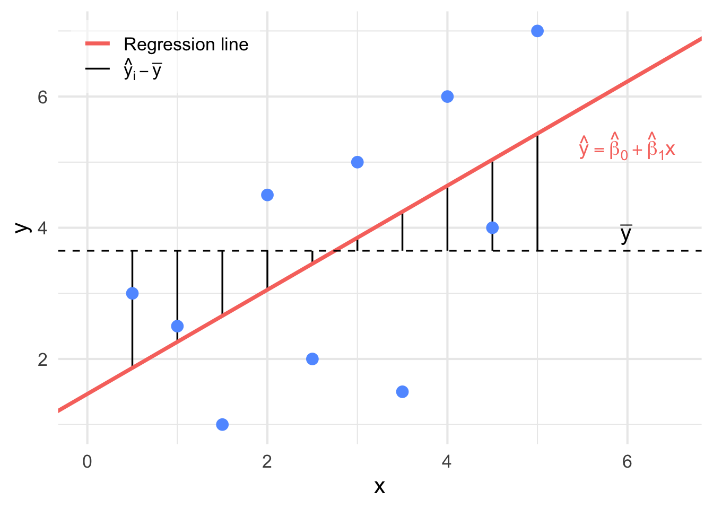
Figure 9.8: An illustration of \(y_i - \bar{y}\). when these distances are squared and added together, we get the SSR.
SST (Total Sum of Squares)
Definition 9.7 For any simple linear regression model, SST (Total sum of squares) measures the sum over all squared differences between the observations and their overall mean \(\bar{y}\) is given by: \[ \mathrm{SST} = \sum_{i=1}^{n}(y_i - \bar{y})^2. \]
The SST is the sum of the squared differences between the observations and their overall mean \(\bar{y}\) in the data. This is illustrated in Figure 9.9.
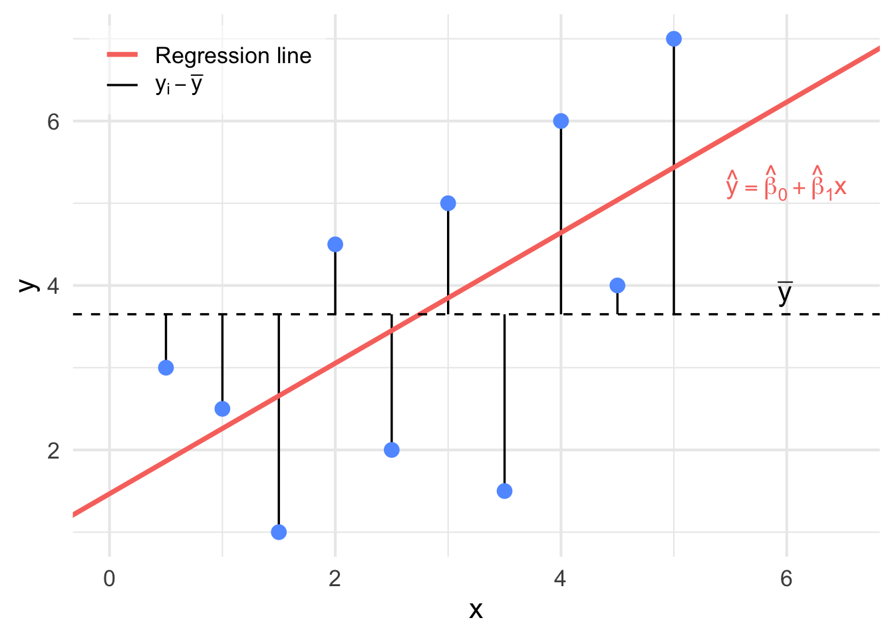
Figure 9.9: An illustration of \(\hat{y}_i - \bar{y}\). when these distances are squared and added together, we get the SST.
The app below allows us to show or hide each of these component on one plot.
Summary
The total variation (SST) can be decomposed as the sum of the variation explained by the model (SSR) and the variation which is not explained by the model (SSE):
\[ \begin{aligned} SST &= SSR + SSE \\ \sum_{i=1}^{n}(y_i - \bar{y})^2 &= \sum_{i=1}^{n}(\hat{y_i} - \bar{y})^2 + \sum_{i=1}^{n}(y_i - \hat{y_i})^2 \end{aligned} \].
Coefficient of Determination (\(r^2\))
Moreover, we can use SST, SSE and SSR to calculate another value which is important in simple linear regression, that is coefficient of determination. It is proportion of variability in \(y\) which is explained by \(x\).
Definition 9.8 We define the coefficient of determination as the sum of squares due to the regression divided by the total sum of squares. \[r^2 = \frac{SSR}{SST} = 1 - \frac{SSE}{SST}.\] The coefficient of determination can be interpreted as the proportion of the variation in \(Y\) that is explained by the regression relationship of \(Y\) with \(X\) (or the proportion of the total corrected sum of squares explained by the regression). Note that: \(0 \leq r^2 \leq 1.\)
9.2 Inference for Simple Linear Regression
In previous chapters, we focused on estimating regression parameters and interpreting the fitted line. In this chapter, we take a step further by conducting formal inference on the slope and intercept of a simple linear regression model. We examine the distribution of errors, assess variability, and introduce the idea of using hypothesis tests and confidence intervals to evaluate whether the linear relationship observed in the data is statistically significant.
We begin by introducing the regression model and exploring the assumptions necessary to perform inference on the coefficients, particularly the slope.
\[Y = \beta_0 + \beta_1 X + \varepsilon, \quad \varepsilon \sim \mathcal{N}(0, \sigma^2)\]
Can perform inference on \(\beta_0\) and \(\beta_1\), however we are usually more interested in \(\beta_1\)
What does the error term \(\varepsilon \sim \mathcal{N}(0, \sigma^2)\)
mean?
At each value of \(X\), the errors are distributed normally with a
mean of zero and a constant variance.
Can verify with residual plots (assumptions).
We estimate \(\sigma^2\) with a value we call \(s^2\) which we use for inference.
9.2.1 Estimating Variance in Linear Regression
\[Y = \beta_0 + \beta_1 X + \varepsilon, \quad \varepsilon \sim \mathcal{N}(0, \sigma^2)\]
Estimate \(\sigma^2\) with \(S^2\):
\[s^2 = \frac{\sum_{i=1}^n e_i^2}{n - 2} = \frac{\sum_{i=1}^n (y_i - \hat{y}_i)^2}{n - 2} = \frac{SSE}{n - 2}\]
A natural question to ask is why we divide by \(n-2\) in the calculation of \(s^2\). The reason is that we are estimating 2 unknown parameters in the model (both \(\beta_0\) and \(\beta_1\) are unknown) and since the calculation of \(s^2\) uses estimates of both parameters, we lose 2 degrees of freedom.
Remark. We can use \(s{x}, \, s{y}, \, \bar{x}, \, \bar{y}\) and \(r\) to calculate the least square estimators using
\[ \begin{aligned} \hat{\beta}_1 & = r \frac{s_y}{s_x} \\ \text{and} \\ \hat{\beta}_0 & = \bar{y} - \hat{\beta}_1 \bar{x} \end{aligned} \]
Example 9.4 Suppose an appliance store conducts a 5-month experiment to determine the effect of advertising on sales revenue. The results are shown in a table below. The relationship between sales revenue, \(y\), and advertising expenditure, \(x\), is hypothesized to follow a first-order linear model, that is,
\[y = \beta_0 + \beta_1 x + \varepsilon\]
where
\[\begin{aligned} y & = \text{dependent variable} \\ x & = \text{independent variable} \\ \beta_0 & = \text{$y$-intercept} \\ \beta_1 & = \text{slope of the line} \\ \varepsilon & = \text{error variable} \end{aligned}\]
| Month | Expenditure \(x\) (hundreds) | Revenue \(y\) (thousands) |
|---|---|---|
| 1 | 1 | 1 |
| 2 | 2 | 1 |
| 3 | 3 | 2 |
| 4 | 4 | 2 |
| 5 | 5 | 4 |
The question is how can we best use the information in the sample of five observations in our table to estimate the unknown \(y\)-intercept \(\beta_0\) and slope \(\beta_1\)?
We are given: \[\bar{x} = 3, \quad \bar{y} = 2, \quad S_x = 1.5811, \quad S_y = 1.2247, \quad S_{xy} = 1.75\]
Then, the slope of the least squares line is
\[b_1 = r \frac{S_y}{S_x} = (0.9037) \left( \frac{1.2247}{1.5811} \right) = 0.7\]
and
\[b_0 = \bar{y} - b_1 \bar{x} = 2 - (0.7)(3) = -0.1\]
The least squares line is thus:
\[\hat{y} = -0.1 + 0.7x\]
9.2.2 Confidence Intervals and Hypothesis Tests
We have \(n\) observations on an explanatory variable \(x\) and a response variable \(y\). Our goal is to study or predict the behavior of \(y\) for given values of \(x\).
For any fixed value of \(x\), the response \(y\) varies according to a Normal distribution. Repeated measures \(y\) are independent of each other.
The mean response \(\mu_y\) has a straight-line relationship with \(x\): \(\mu_y = \beta_0 + \beta_1 x\). The slope \(\beta_1\) and intercept \(\beta_0\) are unknown parameters.
The standard deviation of \(y\) (call it \(\sigma\)) is the same for all values of \(x\). The value of \(\sigma\) is unknown. The regression model has three parameters, \(\beta_0\), \(\beta_1\), and \(\sigma\).
Thus, if \[\hat{y}_i = \hat{\beta}_0 + \hat{\beta}_1 x_i\] is the predicted value of the \(i\)th \(y\) value, then the deviation of the observed value \(y_i\) from \(\hat{y}_i\) is the difference \(y_i - \hat{y}_i\) and the sum of squares of deviations to be minimized is
\[SSE = \sum_{i=1}^{n} (y_i - \hat{y}_i)^2 = \sum_{i=1}^{n} [y_i - (\hat{\beta}_0 + \hat{\beta}_1 x_i)]^2.\]
The quantity SSE is also called the sum of squares for error. \[\begin{aligned} \text{Fitted Value:} \quad & \hat{y}_i = \hat{\beta}_0 + \hat{\beta}_1 x_i \\ \text{Residual:} \quad & \hat{\varepsilon}_i = y_i - \hat{y}_i \end{aligned}\]
The regression standard error is
\[s = \sqrt{\frac{1}{n - 2} \sum \text{residual}^2} = \sqrt{\frac{1}{n - 2} \sum_{i=1}^{n} (y_i - \hat{y}_i)^2} = \sqrt{\frac{SSE}{n - 2}}\]
Use \(s\) to estimate the unknown \(\sigma\) in the regression model
The standard error of \(\hat{\beta}_1\) is the standard deviation of the sampling distribution of \(\hat{\beta}_1\) (estimate of slope \(\beta_1\)):
\[SE(\hat{\beta}_1) = \frac{s}{\sqrt{\sum_{i=1}^{n} (x_i - \bar{x})^2}} = \frac{s}{\sqrt{(n - 1) s_x^2}}\]
Confidence Interval for the Slope
\[\hat{\beta}_1 \pm t_{(n-2, \, \alpha/2)} \cdot SE(\hat{\beta}_1) \quad = \quad \hat{\beta}_1 \pm t_{(n-2, \, \alpha/2)} \cdot \frac{s}{\sqrt{\sum_{i=1}^{n} (x_i - \bar{x})^2}}\]
Example 9.5 Revisit the example on advertising and sales and construct a 95% confidence interval on the slope. Provide an interpretation of the CI.
From earlier: \[\hat{y} = -0.1 + 0.7x\]
| \(x\) | \(y\) | \(\hat{y}\) | \(y - \hat{y}\) | \((y - \hat{y})^2\) | \((x - \bar{x})^2\) |
|---|---|---|---|---|---|
| 1 | 1 | 0.6 | 0.4 | 0.16 | 4 |
| 2 | 1 | 1.3 | -0.3 | 0.09 | 1 |
| 3 | 2 | 2.0 | 0.0 | 0.00 | 0 |
| 4 | 2 | 2.7 | -0.7 | 0.49 | 1 |
| 5 | 4 | 3.4 | 0.6 | 0.36 | 4 |
We are given: \[\sum x_i = 15, \quad \bar{x} = \frac{15}{5} = 3, \quad SSE = 1.10, \quad \sum (x_i - \bar{x})^2 = 10\]
Step 1: Estimate variance and standard deviation \[s^2 = \frac{SSE}{n-2} = \frac{1.10}{5 - 2} = 0.3667 \quad \Rightarrow \quad s = \sqrt{0.3667} = 0.6055\]
Step 2: Compute standard error of \(\hat{\beta}_1\) \[SE(\hat{\beta}_1) = \frac{s}{\sqrt{\sum (x_i - \bar{x})^2}} = \frac{0.6055}{\sqrt{10}} = 0.1914\]
Step 3: Determine critical \(t\)-value
\[n - 2 = 3, \quad \alpha = 0.05, \quad \alpha/2 = 0.025 \Rightarrow \quad t_{(3, 0.025)} = 3.182\]
Step 4: Construct CI for the slope \[\hat{\beta}_1 \pm t_{(n-2, \alpha/2)} \cdot SE(\hat{\beta}_1) = 0.7 \pm 3.182 \cdot 0.1914 = 0.7 \pm 0.6092\]
\[\Rightarrow \text{CI: } (0.0908, \; 1.3092)\]
Interpretation: We are 95% confident the slope (\(\beta_1\)) for this model lies between 0.0908 and 1.3092.
| Suppose CI: | \((-, -)\) Suggests \(\beta_1\) has a negative sign. Suggests negative correlation, potentially good model. |
| Suppose CI: | \((+, +)\) Suggests \(\beta_1\) has a positive sign. Suggests positive correlation, potentially good model. |
| Suppose CI: | \((-, +)\) \(\beta_1 = 0\) is plausible. Suggests no linear relationship between \(x\) and \(y\). |
In cases where the CI does not contain zero, we can infer the sign of the slope (just not the steepness)
The regression standard error is
\[s = \sqrt{\frac{1}{n - 2} \sum_{i=1}^n (y_i - \hat{y}_i)^2} = \sqrt{\frac{SSE}{n - 2}} = \sqrt{\frac{1.1}{3}} = 0.6055\]
Use \(s\) to estimate the unknown \(\sigma\) in the regression model
A level \(C\) confidence interval for the slope \(\beta_1\) of the true regression line is
\[\hat{\beta}_1 \pm t^* SE(\hat{\beta}_1)\]
In this formula, the standard error of the least-squares slope \(\beta_{1}\) is
\[SE(\hat{\beta}_1) = \frac{s}{\sqrt{\sum (x_i - \bar{x})^2}} = \frac{s}{\sqrt{(n - 1) SS_{xx} }}\]
and \(t^*\) is the critical value for the \(t(n - 2)\) density curve with area \(C\) between \(-t^*\) and \(t^*\).
Hypotheses: \[\begin{aligned} H_0\!: \beta_1 = 0 \quad & \text{vs.} \quad H_a\!: \beta_1 > 0 \\ H_0\!: \beta_1 = 0 \quad & \text{vs.} \quad H_a\!: \beta_1 < 0 \\ H_0\!: \beta_1 = 0 \quad & \text{vs.} \quad H_a\!: \beta_1 \neq 0 \quad \text{\textit{(most common)}} \end{aligned}\]
Test Statistic: \[t = \frac{\hat{\beta}_1 - 0}{SE(\hat{\beta}_1)} = \frac{\hat{\beta}_1}{\dfrac{s}{\sqrt{\sum_{i=1}^n (x_i - \bar{x})^2}}}\]
Reference distribution: \(t\) distribution with \(n - 2\) degrees of freedom.
Note: A test statistic always follows the form: \[\text{test stat} = \frac{\text{statistic} - \text{hypothesized value}}{\text{SE(statistic)}}\]
Example 9.6 For the advertising example, perform a two-sided hypothesis test on the slope.
Hypotheses: \[H_0\!: \beta_1 = 0 \qquad H_a\!: \beta_1 \neq 0\]
Test Statistic: \[t^* = \frac{\hat{\beta}_1 - 0}{\dfrac{s}{\sqrt{\sum (x_i - \bar{x})^2}}} = \frac{0.7 - 0}{0.6055 / \sqrt{10}} = 3.6558\]
Reference Distribution: \(t\) distribution with \(n - 2 = 5 - 2 = 3\) degrees of freedom.
Decision Rule:
Using a two-tailed test: \[\text{p-value} = 2 \cdot P(T_3 > 3.6558) < 0.01 \Rightarrow \text{p-value} < 0.05\]
Conclusion: Since \(p\)-value \(< 0.05\), we reject \(H_0\) and conclude \(H_a\!: \beta_1 \neq 0\).
Interpretation: The slope should be included in the model. There is significant evidence of a linear relationship between advertising and sales revenue
For the advertising-sales example, a 95% Confidence Interval for the slope \(\beta_1\) is \[0.7 \pm 3.182 \left( \frac{0.6055}{\sqrt{10}} \right)\] \[0.7 \pm 0.6092\]
Thus, we estimate with 95% confidence that the interval from 0.0908 and 1.3092 includes the parameter \(\beta_1\).
We can also test hypotheses about the slope \(\beta_1\). The most common hypothesis is
\[H_0 : \beta_1 = 0.\]
A regression line with slope 0 is horizontal. That is, the mean of \(y\) does not change at all when \(x\) changes. So this \(H_0\) says that there is no true linear relationship between \(x\) and \(y\).
To test the hypothesis \(H_0 : \beta_1 = 0\), compute the \(t\) statistic \[t = \frac{\hat{\beta}_1}{SE({\hat{\beta}_1})}.\]
In terms of a random variable \(T\) having the \(t(n - 2)\) distribution, the P-value for a test of \(H_0\) against: \[\begin{aligned} H_a : \beta_1 \ne 0 & \quad \text{is } 2P(T > |t|). \\ H_a : \beta_1 > 0 & \quad \text{is } P(T > t). \\ H_a : \beta_1 < 0 & \quad \text{is } P(T < t). \end{aligned}\]
Example 9.7 \[\alpha = 0.05\]
\(H_0: \beta_1 = 0 \quad \text{vs} \quad H_a: \beta_1 > 0\)
\(t^* = \displaystyle\frac{\hat{\beta}_1}{SE(\hat{\beta}_1)} = \displaystyle\frac{0.7}{0.1914} = 3.6572\)
\(P\text{-value} = P(T > t) = P(T > 3.6572) \quad \text{d.f.} = n - 2 = 5 - 2 = 3.\)
Using t-distribution table, \(0.01 < P\text{ value} < 0.025\)Since \(P\text{-value} < \alpha = 0.05\), we reject \(H_0\).
Our example (different \(H_a\)) \[\alpha = 0.05\]
\(H_0: \beta_1 = 0 \quad \text{vs} \quad H_a: \beta_1 \neq 0\)
\(t^* = \frac{b_1}{SE_{b_1}} = \frac{0.7}{0.1914} = 3.6572\)
\(P\text{-value} = 2P(T > |t|) = 2P(T > 3.6572) \quad \text{d.f.} = n - 2 = 5 - 2 = 3.\)
Using Table 3, \(0.02 < P\text{ value} < 0.05\)Since \(P\text{-value} < \alpha = 0.05\), we reject \(H_0\).
R code
x = c(1, 2, 3, 4, 5);
y = c(1, 1, 2, 2, 4);
mod = lm(y~x);
summary(mod);R Output
##
## Call:
## lm(formula = y~x)
##
## Residuals:
## 1 2 3 4 5
## 4.000e-01 -3.000e-01 -3.886e-16 -7.000e-01 6.000e-01
##
## Coefficients:
## Estimate Std. Error t value Pr(>|t|)
## (Intercept) -0.1000 0.6351 -0.157 0.8849
## x 0.7000 0.1915 3.656 0.0354 *
## ---
## Signif. codes: 0 ‘***’ 0.001 ‘**’ 0.01 ‘*’ 0.05 ‘.’ 0.1 ‘ ’ 1
##
## Residual standard error: 0.6055 on 3 degrees of freedom\[\hat{y} = \hat{\beta}_0 + \hat{\beta}_1 x = -0.10 + 0.70x\] \[SE(\hat{\beta}_1) = 0.1915\]
By default, R conducts the following test for each coefficient:
\[\begin{aligned} H_0&: \beta_j = 0 \\ H_a&: \beta_j \ne 0 \quad \text{(two sided)} \end{aligned}\]
Test statistic: \[t^* = \frac{\hat{\beta}_j - 0}{SE(\hat{\beta}_j)}\]
For advertising and sales data: \[\begin{aligned} H_0&: \beta_1 = 0 \\ H_a&: \beta_1 \ne 0 \end{aligned}\]
\[t^* = \frac{\hat{\beta}_1 - 0}{SE(\hat{\beta}_1)} = \frac{0.70}{0.1915} = 3.656\]
Review
\[\begin{aligned} y &= \beta_0 + \beta_1 x + \varepsilon, \quad \varepsilon \sim N(0, \sigma^2) \\ \hat{y} &= \hat{\beta}_0 + \hat{\beta}_1 x \\ \hat{\beta}_1 &= \frac{\sum (x_i - \bar{x})(y_i - \bar{y})}{\sum (x_i - \bar{x})^2} = \frac{s_{xy}}{s_{xx}} \\ \hat{\beta}_0 &= \bar{y} - \hat{\beta}_1 \bar{x} \\ \end{aligned}\]
r: coefficient of correlation (strength)
r\(^2\): coefficient of determination (% variability)
\[\begin{aligned} s^2 &= \frac{\sum_{i=1}^n (y_i - \hat{y}_i)^2}{n - 2} = \frac{SSE}{n - 2} \\ s &= \sqrt{s^2} \\ SE(\hat{\beta}_1) &= \frac{s}{\sqrt{s_{xx}}} \\ CI &: \hat{\beta}_1 \pm t_{n - 2, \alpha/2} \cdot SE(\hat{\beta}_1) \\ \end{aligned}\] Hypothesis test: \[\begin{aligned} H_0 &: \beta_1 = 0 \\ \text{Test stat:}\quad t &= \frac{\hat{\beta}_1 - 0}{SE(\hat{\beta}_1)} \end{aligned}\]
We square all three deviations for each one of our data points, and sum over all \(n\) points. Here, cross terms drop out, and we are left with the following equation:
\[\sum_{i=1}^{n}(y_i - \bar{y})^2 = \sum_{i=1}^{n}(y_i - \hat{y}_i)^2 + \sum_{i=1}^{n}(\hat{y}_i - \bar{y})^2\]
\[\text{SST} = \text{SSE} + \text{SSR}\]
Total sum of squares = Sum of squares for error + Sum of squares for regression
\[\begin{aligned} SSE &= \sum_{i=1}^{n} (y_i - \hat{y}_i)^2 \\ &= \sum_{i=1}^{n} (y_i - \bar{y})^2 - \hat{\beta}_1 \sum_{i=1}^{n} (x_i - \bar{x})(y_i - \bar{y}) \\ &= S_{YY} - \hat{\beta}_1 S_{XY} \end{aligned}\]
Notice that this provides an easier computational method of finding SSE
R output (Additional example)
> summary(model);
Call:
lm(formula = camrys$Price ~ Odometer, data = camrys)
Residuals:
Min 1Q Median 3Q Max
-0.68679 -0.27263 0.00521 0.23210 0.70071
Coefficients:
Estimate Std. Error t value Pr(>|t|)
(Intercept) 17.248727 0.182093 94.72 <2e-16 ***
Odometer -0.066861 0.004975 -13.44 <2e-16 ***
---
Signif. codes: 0 ‘***’ 0.001 ‘**’ 0.01 ‘*’ 0.05 ‘.’ 0.1 ‘ ’ 1
Residual standard error: 0.3265 on 98 degrees of freedom
Multiple R-squared: 0.6483, Adjusted R-squared: 0.6447
F-statistic: 180.6 on 1 and 98 DF, p-value: < 2.2e-169.2.3 ANOVA Table for Simple Linear Regression
Analysis of Variance (ANOVA) is a statistical method used to assess whether variation in a response variable can be explained by predictor variables in a regression model. It summarizes sources of variation using sums of squares, degrees of freedom, and mean squares in a structured table format.
| Source of Variation | Sum of Squares | Degrees of Freedom | Mean Square | Computed F |
|---|---|---|---|---|
| Regression | SSR | 1 | SSR | \(\dfrac{SSR}{SSE / (n - 2)}\) |
| Error | SSE | \(n - 2\) | \(s^2 = \dfrac{SSE}{n - 2}\) | |
| Total | SST | \(n - 1\) |
For the general multivariate regression model: \[\begin{aligned} Y &= \beta_0 + \beta_1 X_1 + \beta_2 X_2 + \cdots + \beta_p X_p + \varepsilon, \\ &\quad \varepsilon \sim N(0, \sigma^2) \end{aligned}\] with \(p\) predictors
ANOVA can be used for testing: \[\begin{aligned} H_0&: \beta_1 = \beta_2 = \cdots = \beta_p = 0 \\ H_a&: \text{At least one } \beta_j \ne 0, \quad j = 1, \ldots, p \end{aligned}\]
Test Statistic: \[\begin{aligned} F &= \dfrac{MSR}{MSE} = \dfrac{SSR/p}{SSE / (n - p - 1)} \sim F(p, n - p - 1) \end{aligned}\]
Reference distribution: \(F\) with numerator df = \(p\), denominator df = \(n - p - 1\)
Example 9.8 We fitted a simple linear regression model using:
x = c(1,2,3,4,5);
y = c(1,1,2,2,4);
mod = lm(y~x);
anova(mod);The ANOVA output was:
## Analysis of Variance Table
##
## Response: y
## Df Sum Sq Mean Sq F value Pr(>F)
## x 1 4.9 4.9000 13.364 0.03535 *
## Residuals 3 1.1 0.3667
## ---
## Signif. codes:
## 0 ‘***’ 0.001 ‘**’ 0.01 ‘*’ 0.05 ‘.’ 0.1 ‘ ’ 1Interpretation:
The regression model includes one predictor \(x\), so the degrees of freedom for regression is 1.
The sum of squares for regression is \(SSR = 4.9\), and for residuals \(SSE = 1.1\).
Mean squares are calculated as: \[MSR = \frac{SSR}{1} = 4.9, \quad MSE = \frac{SSE}{n - 2} = \frac{1.1}{3} = 0.3667\]
The F-statistic is: \[F = \frac{MSR}{MSE} = \frac{4.9}{0.3667} \approx 13.364\]
The p-value is \(\approx 0.03535\), indicating that the predictor is significant at the 5% level.
Conclusion: Since the p-value is less than 0.05, we reject \(H_0\) and conclude that \(x\) has a statistically significant linear relationship with \(y\).
Example 9.9 We consider data on apartments near UTM, with price (in thousands of dollars), area (in 100 square feet), and number of beds and baths.
| Price | Area | Beds | Baths |
| (\(\times 1000\)) | (\(\times 100\) sq ft) | ||
| 620 | 11.0 | 2 | 2 |
| 590 | 6.5 | 2 | 1 |
| 620 | 10.0 | 2 | 2 |
| 700 | 8.4 | 2 | 2 |
| 680 | 8.0 | 2 | 2 |
| 500 | 5.7 | 1 | 1 |
| 760 | 12.0 | 2 | 2 |
| 800 | 14.0 | 3 | 1 |
| 660 | 7.3 | 2 | 1 |
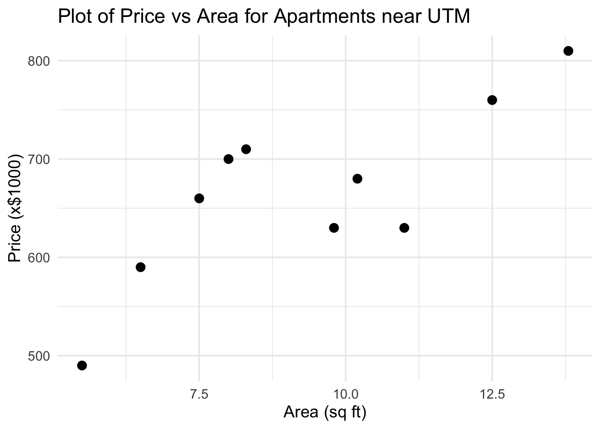
Figure 9.10: Plot of Price vs Area for Apartments near UTM
| Price | Area | \((x-\bar{x})\) | \((y-\bar{y})\) | \((x-\bar{x})(y-\bar{y})\) | \((x-\bar{x})^2\) |
|---|---|---|---|---|---|
| 620 | 11.0 | 1.8 | -38.9 | -70.02 | 3.24 |
| 590 | 6.5 | -2.7 | -68.9 | 186.03 | 7.29 |
| 620 | 10.0 | 0.8 | -38.9 | -31.12 | 0.64 |
| 700 | 8.4 | -0.8 | 41.1 | -32.88 | 0.64 |
| 680 | 8.0 | -1.2 | 21.1 | -25.32 | 1.44 |
| 500 | 5.7 | -3.5 | -158.9 | 556.15 | 12.25 |
| 760 | 12.0 | 2.8 | 101.1 | 283.08 | 7.84 |
| 800 | 14.0 | 4.8 | 141.1 | 677.28 | 23.04 |
| 660 | 7.3 | -1.9 | 1.1 | -2.09 | 3.61 |
| Sum | 82.9 | \(\sum (x - \bar{x})(y - \bar{y})\) | \(\sum (x - \bar{x})^2\) | ||
| = 1541.11 | = 60.00 |
The sample means are: \[ \begin{aligned} \bar{y} &= \frac{\sum y}{n} = \frac{5930}{9} = 658.89\\ \hfill\\ \bar{x} &= \frac{\sum x}{n} = \frac{82.9}{9} = 9.21 \end{aligned} \]
Finding the Regression Coefficients
To compute the least squares regression line, we calculate the slope and intercept using the formulas:
\[ \begin{aligned} \hat{\beta}_1 &= \frac{S_{xy}}{S_{xx}} = \frac{1541.11}{60} = 25.69 \\ \hfill\\ \hat{\beta}_0 &= \bar{y} - \hat{\beta}_1 \bar{x} = 658.89 - (25.69)(9.21) = 422.28 \end{aligned} \]
Equation of the Regression Line
Using the values above, we write the estimated regression equation as:
\[\hat{y} = \hat{\beta}_0 + \hat{\beta}_1 x = 422.28 + 25.69x\]
This equation gives the predicted apartment price (in $1000s) based on area (in 100 sq ft).
Interpretation of Coefficients
The slope \(\hat{\beta}_1 = 25.69\) means that for every additional 100 sq ft in area, we expect the apartment price to increase by approximately $25,690 on average
The intercept \(\hat{\beta}_0 = 422.28\) suggests the predicted price when the area is zero. While this has no practical interpretation in this context, it is a necessary component of the regression model.
Interpolation and Extrapolation
To estimate the price of an apartment with an area of 800 sq ft (i.e., \(x = 8\)), we compute:
\[\hat{y} = 422.28 + 25.69(8) = 627.8 \quad (\$1000)\]
Since 8 is within the range of observed values, this is an example of interpolation.
For an apartment with 2,500 sq ft (\(x = 25\)):
\[\hat{y} = 422.28 + 25.69(25) = 1064.53 \quad (\$1000)\]
This is an example of extrapolation, and such predictions should be treated with caution since they lie outside the data range
We can create a simple linear regression model in R using the lm
command:
R code
lm(y ~ x, data = data_source)The data is available in the apt_around_utm.csv file.
R code
apt = read.csv(file.choose())
# apt = read.csv("~/PATH_TO_FILE/apt_around_utm.csv")
apt_model = lm(price ~ area, data = apt)R output
> apt_model
Call:
lm(formula = price ~ area, data = apt)
Coefficients:
(Intercept) area
422.26 25.69 We can compute the residuals and the sum of squared errors (SSE) using the table below:
| \(y\) | \(x\) | \(\hat{y}\) | \(y - \hat{y}\) | \((y - \hat{y})^2\) | |
|---|---|---|---|---|---|
| 620 | 11.0 | 704.85 | -84.85 | 7198.73 | |
| 590 | 6.5 | 589.24 | 0.76 | 0.58 | |
| 620 | 10.0 | 679.16 | -59.16 | 3499.36 | |
| 700 | 8.4 | 638.05 | 61.95 | 3837.62 | |
| 680 | 8.0 | 627.78 | 52.22 | 2727.4 | |
| 500 | 5.7 | 568.69 | -68.69 | 4718.13 | |
| 760 | 12.0 | 730.54 | 29.46 | 868.17 | |
| 800 | 14.0 | 781.92 | 18.08 | 327.06 | |
| 660 | 7.3 | 609.79 | 50.21 | 2520.79 |
Recall our fitted regression model: \[\hat{y} = 25.69x + 422.26\]
\[\text{SSE} = \sum (y_i - \hat{y}_i)^2 = 25,\!697.83\]
We now conduct a hypothesis test on the slope \(\beta_1\) at the 5% significance level.
Step 1: Hypotheses \[H_0: \beta_1 = 0 \quad \text{vs.} \quad H_a: \beta_1 \ne 0\]
Step 2: Test statistic \[s^2 = \frac{SSE}{n - 2} = \frac{25,\!697.83}{7} = 3670.26\] \[s = \sqrt{3670.26} = 60.58\] \[SE(\hat{\beta}_1) = \frac{s}{\sqrt{S_{xx}}} = \frac{60.58}{\sqrt{60}} = 7.82\] \[t = \frac{\hat{\beta}_1 - 0}{SE(\hat{\beta}_1)} = \frac{25.69}{7.82} = 3.284\]
Step 3: Conclusion Using \(t\)-distribution with 7 degrees of freedom:
\[0.005 < p\text{-value} < 0.01\]
Since \(p\)-value \(< 0.05\), we reject \(H_0\) and conclude that there is sufficient evidence that \(\beta_1 \ne 0\).This suggests there is a statistically significant relationship between price and area for apartments near UTM.
Final Check: Total Sum of Squares
| \(y\) | \(x\) | \(\hat{y}\) | \((y - \hat{y})^2\) | \((y - \bar{y})^2\) | \((\hat{y} - \bar{y})^2\) | |
|---|---|---|---|---|---|---|
| 620 | 11.0 | 704.85 | 7198.73 | 2112.00 | 1512.35 | |
| 590 | 6.5 | 589.24 | 0.58 | 4850.88 | 4745.68 | |
| 620 | 10.0 | 679.16 | 3499.36 | 410.73 | 1512.35 | |
| 700 | 8.4 | 638.05 | 3837.62 | 434.20 | 1690.12 | |
| 680 | 8.0 | 627.78 | 2727.4 | 968.04 | 445.68 | |
| 500 | 5.7 | 568.69 | 4718.13 | 8136.08 | 2524.68 | |
| 760 | 12.0 | 730.54 | 868.17 | 5133.21 | 10223.46 | |
| 800 | 14.0 | 781.92 | 327.06 | 1513.47 | 19912.35 | |
| 660 | 7.3 | 609.79 | 2520.79 | 2410.45 | 1.23 |
\[SSE + SSR = SST = 25,\!697.83 + 39,\!591.06 = 65,\!288.90\] This confirms the ANOVA identity: Total = Explained + Residual
We previously estimated the model:
\[\hat{y} = 25.69x + 422.26\]
Coefficient of Determination and Correlation
\[r^2 = \frac{SSR}{SST} = \frac{39591.06}{65288.90} = 0.6063 = 60.63\%\]
Interpretation: Approximately 60.63% of the variability in price is explained by the regression model.
\[r = \pm \sqrt{r^2} = \pm \sqrt{0.6063} = \pm 0.779\]
Since \(\hat{\beta}_1 > 0\), we choose the positive root:
\[r = 0.779\]
Interpretation: There is a strong positive correlation between apartment area and price.
R code
model = lm(y~x, data = data\_source)
summary(model)R code
apt\_model = lm(price ~ area, data = apt)
summary(apt\_model)R code
Call:
lm(formula = price ~ area, data = apt)
Coefficients:
Estimate Std. Error t value Pr(>|t|)
(Intercept) 422.256 74.834 5.643 0.00078 ***
area 25.690 7.823 3.284 0.01341 *
Residual standard error: 60.59 on 7 degrees of freedom
Multiple R-squared: 0.6064, Adjusted R-squared: 0.5502
F-statistic: 10.78 on 1 and 7 DF, p-value: 0.01341Two-sided Test for Slope Coefficient
By default, R performs a two-sided test: \[H_0: \beta_1 = 0 \quad \text{vs.} \quad H_a: \beta_1 \neq 0\]
Test statistic: \[t^* = \frac{\hat{\beta}_1 - 0}{SE(\hat{\beta}_1)} = \frac{25.690 - 0}{7.823} = 3.284\]
\[t^* \sim t_{(n - 2)} \quad \text{with } df = 9 - 2 = 7\]
p-value is the total shaded area in both tails. From R output: \[\text{p-value} = 0.01341\]
Definition 9.9
Interpolation is calculating predicted values of \(y\) using our linear model while working within the range of \(x\) in which data was available to construct our model.
Extrapolation is calculating predicted values of \(y\) using our linear model outside the range of \(x\) used to obtain the linear model.
Interpolation is usually safe if we have a good linear model.
Extrapolation must be performed carefully since extrapolations that are done without any foresight can be very inaccurate.
9.2.4 Residual Plots
Residual plots are used to verify assumptions related to the error terms in a regression model.
\[Y = \beta_0 + \beta_1 X + \varepsilon, \quad \varepsilon \sim \mathcal{N}(0, \sigma^2)\]
The assumption \(\varepsilon \sim \mathcal{N}(0, \sigma^2)\) implies:
Mean of errors is 0
Constant variance of errors (homoscedasticity)
We plot the residuals: \[e_i = y_i - \hat{y}_i\] against the fitted values \(\hat{y}_i\) to assess these assumptions.
If the assumption \(\varepsilon \sim \mathcal{N}(0, \sigma^2)\) is satisfied, the residual plot should have the following features:
Random scattering: No obvious pattern in residuals.
A pattern (e.g., curve) may indicate a non-linear relationship.
Random scattering also suggests independence of errors.
Constant variance: Residuals should fall within a horizontal band, roughly half above and half below zero.
- Suggests constant variance (homoscedasticity).
No influential points or clustering: The plot should not show isolated influential observations or clustering.
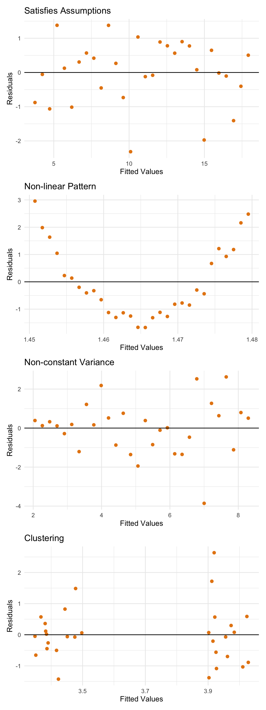
Figure 9.11: Examples of residual plots which satisfy assumpations and which violate assumptions
The model is: \(Y = \beta_0 + \beta_1 X + \varepsilon\), where \(\varepsilon \sim \mathcal{N}(0, \sigma^2)\)
The relationship between \(X\) and \(Y\) is linear.
Residuals:
are independent
have constant variance
are normally distributed
These assumptions can be verified using residual plots.
9.3 Exercises
Question 1
An agronomist records the amount of rainfall (\(x\), in mm) and the corresponding wheat yield (\(y\), in tonnes per hectare) for 6 growing seasons:
| Rainfall (\(x\)) | 200 | 250 | 300 | 350 | 400 | 450 |
|---|---|---|---|---|---|---|
| Yield (\(y\)) | 2.1 | 2.8 | 3.4 | 3.9 | 4.5 | 5.0 |
- Compute \(\bar{x}\), \(\bar{y}\), \(S_{xx}\), and \(S_{xy}\).
- Find \(\hat{\beta}_1\) and \(\hat{\beta}_0\). Write the fitted regression equation.
- Predict the wheat yield when rainfall is 320 mm.
- Interpret \(\hat{\beta}_1\) in context.
💡 Hint
✅ Answer
(a) \(\bar{x} = 325\), \(\bar{y} \approx 3.617\)
\(S_{xx} = 200^2+250^2+\cdots+450^2 - 6(325)^2 = 43{,}750\)
\(S_{xy} = 200(2.1)+\cdots+450(5.0) - 6(325)(3.617) \approx 502.5\)
(b) \(\hat{\beta}_1 = 502.5/43{,}750 \approx 0.01149\); \(\hat{\beta}_0 = 3.617 - 0.01149(325) \approx -0.116\)
\(\hat{y} = -0.116 + 0.01149\,x\)
(c) \(\hat{y} = -0.116 + 0.01149(320) \approx 3.56\) tonnes/ha
(d) For each additional mm of rainfall, the predicted wheat yield increases by approximately 0.0115 tonnes per hectare.
Question 2
A physiologist studying cardiovascular fitness measures resting heart rate (\(y\), bpm) and weekly exercise duration (\(x\), hours) for 5 participants:
| Exercise (\(x\)) | 1 | 3 | 5 | 7 | 9 |
|---|---|---|---|---|---|
| Heart rate (\(y\)) | 80 | 74 | 70 | 65 | 62 |
- Compute \(\hat{\beta}_0\) and \(\hat{\beta}_1\).
- Compute the residuals \(e_i = y_i - \hat{y}_i\) for each observation. Verify \(\sum e_i = 0\).
- A participant exercises 6 hours per week and has a heart rate of 68 bpm. Compute their residual and state whether their actual heart rate is above or below the predicted value.
💡 Hint
- First find \(\bar{x}\), \(\bar{y}\), \(S_{xx}\), \(S_{xy}\), then compute the estimates.
- Residuals are \(e_i = y_i - \hat{y}_i\); for part (c) compute \(\hat{y}\) at \(x = 6\).
✅ Answer
\(\bar{x} = 5\), \(\bar{y} = 70.2\), \(S_{xx} = 40\), \(S_{xy} = -90\)
(a) \(\hat{\beta}_1 = -90/40 = -2.25\); \(\hat{\beta}_0 = 70.2 - (-2.25)(5) = 81.45\)
Fitted line: \(\hat{y} = 81.45 - 2.25x\)
(b)
| \(x\) | \(y\) | \(\hat{y}\) | \(e_i\) |
|---|---|---|---|
| 1 | 80 | 79.20 | 0.80 |
| 3 | 74 | 74.70 | −0.70 |
| 5 | 70 | 70.20 | −0.20 |
| 7 | 65 | 65.70 | −0.70 |
| 9 | 62 | 61.20 | 0.80 |
\(\sum e_i = 0\) ✓
(c) \(\hat{y} = 81.45 - 2.25(6) = 67.95\); residual \(= 68 - 67.95 = 0.05\) bpm. The participant’s heart rate is (slightly) above the predicted value.
Question 3
The R dataset women contains the average height (inches) and weight (pounds) of American women aged 30–39. The data consist of 15 observations.
- State the regression model you would fit to predict weight from height.
- Using the summary statistics \(\bar{x} = 65\), \(\bar{y} \approx 136.73\), \(S_{xx} = 280\), \(S_{xy} = 966\): find \(\hat{\beta}_0\) and \(\hat{\beta}_1\).
- Compute \(R^2\) given \(S_{yy} \approx 3362.93\) and \(\text{SSE} \approx 30.23\).
- Interpret \(R^2\) in one sentence.
💡 Hint
- \(R^2 = 1 - \text{SSE}/\text{SST}\) where \(\text{SST} = S_{yy}\)
- Alternatively, \(R^2 = \hat{\beta}_1 S_{xy} / S_{yy}\)
✅ Answer
(a) \(\text{weight}_i = \beta_0 + \beta_1 \cdot \text{height}_i + \varepsilon_i\), \(\varepsilon_i \sim N(0, \sigma^2)\)
(b) \(\hat{\beta}_1 = 966/280 = 3.45\); \(\hat{\beta}_0 = 136.73 - 3.45(65) \approx -87.52\)
(c) \(R^2 = 1 - 30.23/3362.93 \approx 0.991\)
(d) About 99.1% of the variability in women’s weight is explained by the linear relationship with height — an excellent linear fit.
Question 4
The R dataset faithful records eruption duration (minutes) and waiting time to the next eruption (minutes) for Old Faithful geyser in Yellowstone National Park.
Use R to fit a regression of waiting on eruptions, produce a scatter plot with the regression line, and report the coefficients.
- Report \(\hat{\beta}_0\) and \(\hat{\beta}_1\). Interpret \(\hat{\beta}_1\) in context.
- Predict the waiting time after an eruption lasting 3.5 minutes.
R Exercise
💡 Hint
lm(waiting ~ eruptions, data = faithful)fits the model.abline(model, col = "blue")adds the line to the plot.- Use
predict(model, newdata = data.frame(eruptions = 3.5))for part (b).
✅ Answer
model <- lm(waiting ~ eruptions, data = faithful)
coef(model)
plot(faithful$eruptions, faithful$waiting,
xlab = "Eruption Duration (min)", ylab = "Waiting Time (min)")
abline(model, col = "blue")
predict(model, newdata = data.frame(eruptions = 3.5))(a) \(\hat{\beta}_0 \approx 33.47\), \(\hat{\beta}_1 \approx 10.73\). For each additional minute of eruption duration, the predicted waiting time increases by about 10.73 minutes.
(b) \(\hat{y} = 33.47 + 10.73(3.5) \approx 71.0\) minutes.
Question 5
A marketing analyst fits a regression of monthly sales (\(y\), $1000s) on advertising spend (\(x\), $1000s) using \(n = 20\) observations. The following summary statistics are available:
\[\bar{x} = 8, \quad \bar{y} = 150, \quad S_{xx} = 400, \quad S_{xy} = 2000, \quad S_{yy} = 12{,}500\]
- Find \(\hat{\beta}_0\) and \(\hat{\beta}_1\).
- Compute SSE, \(\hat{\sigma}^2\), and \(\hat{\sigma}\).
- Compute \(R^2\) and \(|r|\).
- Compute \(\text{SE}(\hat{\beta}_1) = \hat{\sigma}/\sqrt{S_{xx}}\) and construct a 95% CI for \(\beta_1\) using \(t_{0.025,\,18} \approx 2.101\).
💡 Hint
- \(\text{SSE} = S_{yy} - \hat{\beta}_1 S_{xy}\)
- \(\hat{\sigma}^2 = \text{SSE}/(n-2)\)
- \(R^2 = 1 - \text{SSE}/S_{yy}\)
✅ Answer
(a) \(\hat{\beta}_1 = 2000/400 = 5\); \(\hat{\beta}_0 = 150 - 5(8) = 110\)
(b) SSE \(= 12{,}500 - 5(2000) = 2500\); \(\hat{\sigma}^2 = 2500/18 \approx 138.9\); \(\hat{\sigma} \approx 11.79\)
(c) \(R^2 = 1 - 2500/12{,}500 = 0.80\); \(|r| = \sqrt{0.80} \approx 0.894\)
(d) \(\text{SE}(\hat{\beta}_1) = 11.79/\sqrt{400} = 11.79/20 \approx 0.589\)
95% CI: \(5 \pm 2.101(0.589) = 5 \pm 1.238 = (3.762,\ 6.238)\)
Question 6
For the data in Question 1 (rainfall and wheat yield):
- Compute SSE, SSR, and SST. Verify \(\text{SST} = \text{SSR} + \text{SSE}\).
- Fill in the ANOVA table:
| Source | df | SS | MS |
|---|---|---|---|
| Regression | |||
| Error | |||
| Total |
- Compute \(R^2\) and interpret it.
- Compute the F-statistic. State the null and alternative hypotheses being tested.
💡 Hint
- SST \(= S_{yy}\); SSR \(= \hat{\beta}_1 S_{xy}\); SSE \(= S_{yy} - \hat{\beta}_1 S_{xy}\)
- In SLR with one predictor: df(Regression) \(= 1\), df(Error) \(= n - 2\), df(Total) \(= n - 1\)
✅ Answer
From Q1: \(\hat{\beta}_1 \approx 0.01149\), \(S_{xy} = 502.5\), \(S_{yy} \approx 5.788\)
(a) SSR \(= 0.01149(502.5) \approx 5.772\); SSE \(= 5.788 - 5.772 \approx 0.017\); SST \(= 5.788\)
$5.772 + 0.017 = $ SST ✓
(b)
| Source | df | SS | MS |
|---|---|---|---|
| Regression | 1 | 5.772 | 5.772 |
| Error | 4 | 0.017 | 0.00419 |
| Total | 5 | 5.788 |
(c) \(R^2 = 5.772/5.788 \approx 0.997\). About 99.7% of the variability in wheat yield is explained by the linear relationship with rainfall.
(d) \(F = 5.772/0.00419 \approx 1377\). \(H_0: \beta_1 = 0\) vs \(H_1: \beta_1 \neq 0\). This extremely large F-statistic provides overwhelming evidence of a linear relationship.
Question 7
The R dataset pressure records temperature (°C) and vapor pressure of mercury (mm Hg) at various temperatures. A researcher fits a regression of pressure on temperature.
Use R to:
- Fit the model, report \(R^2\) and \(\hat{\sigma}\), and produce a scatter plot with the fitted line.
- Generate the residuals-vs-fitted plot (
which = 1). Comment on whether the linearity and constant variance assumptions appear satisfied. - From the
summary()output, report \(\hat{\sigma}^2\) and \(\text{SE}(\hat{\beta}_1)\). Carry out the t-test of \(H_0: \beta_1 = 0\) vs \(H_1: \beta_1 \neq 0\) at \(\alpha = 0.05\) and state your conclusion.
R Exercise
💡 Hint
- A curved pattern in the residuals-vs-fitted plot indicates the linearity assumption is violated; a fan shape indicates non-constant variance.
- The t-statistic and its p-value for
temperatureare reported directly in thesummary()output.
✅ Answer
(a) \(R^2 \approx 0.574\), \(\hat{\sigma} \approx 150.8\).
(b) The residuals-vs-fitted plot shows a strong curved (U-shaped) pattern with the spread of residuals changing across fitted values. Both the linearity assumption and the constant variance assumption appear to be violated — a straight-line model is not a good description of these data.
(c) From the output: \(\hat{\sigma} \approx 150.8\), so \(\hat{\sigma}^2 \approx 22{,}740\); \(\text{SE}(\hat{\beta}_1) \approx 0.316\); \(t = 1.512/0.316 \approx 4.79\) with \(n - 2 = 17\) df, p-value \(\approx 0.00017 < 0.05\). We reject \(H_0\). There is strong evidence that the slope is non-zero. (Note from (b): although the test is highly significant, the linear model is clearly mis-specified, so the slope estimate should be interpreted with caution.)
Question 8
A regression with \(n = 25\) observations produces the following partial ANOVA table:
| Source | df | SS | MS |
|---|---|---|---|
| Regression | 1 | 640 | |
| Error | |||
| Total | 800 |
- Fill in all missing entries.
- Compute \(R^2\), \(\hat{\sigma}\), and the F-statistic.
- Test \(H_0: \beta_1 = 0\) at \(\alpha = 0.05\) using \(F_{0.05,\,1,\,23} \approx 4.28\). State your conclusion.
💡 Hint
- SSE \(=\) SST \(-\) SSR; df(Error) \(= n - 2\); df(Total) \(= n - 1\)
- \(F = \text{MSR}/\text{MSE}\); reject \(H_0\) if \(F > F_{\alpha,\,1,\,n-2}\)
✅ Answer
(a)
| Source | df | SS | MS |
|---|---|---|---|
| Regression | 1 | 640 | 640 |
| Error | 23 | 160 | 6.96 |
| Total | 24 | 800 |
(b) \(R^2 = 640/800 = 0.80\); \(\hat{\sigma} = \sqrt{6.96} \approx 2.64\); \(F = 640/6.96 \approx 92.0\)
(c) \(F = 92.0 \gg 4.28\). Reject \(H_0\). There is strong evidence of a linear relationship between \(x\) and \(y\).
Question 9
The R dataset airquality contains daily air quality measurements in New York (May–September 1973). Consider predicting ozone concentration (Ozone, ppb) from temperature (Temp, °F).
Use R to fit the regression, report the full summary(), and test whether temperature is a significant predictor of ozone at \(\alpha = 0.01\).
- State \(H_0\) and \(H_1\).
- Report the t-statistic and p-value for
Tempfrom the output. - State your conclusion. Interpret \(\hat{\beta}_1\) in context.
R Exercise
💡 Hint
- Use
na.omit()to remove missing values before fitting. - The p-value for
Tempinsummary()tests \(H_0: \beta_1 = 0\). - Reject \(H_0\) if p-value \(< \alpha = 0.01\).
✅ Answer
(a) \(H_0: \beta_1 = 0\) vs \(H_1: \beta_1 \neq 0\)
(b) \(t \approx 10.4\), p-value \(< 2 \times 10^{-16}\)
(c) Reject \(H_0\) at \(\alpha = 0.01\). There is very strong evidence that temperature is a significant predictor of ozone. Each 1°F increase in temperature is associated with an average increase of about 2.43 ppb in ozone concentration.
Question 10
A forestry researcher records the girth (\(x\), inches) and volume (\(y\), cubic feet) of 31 black cherry trees (the R dataset trees).
- Using summary statistics: \(\bar{x} = 13.25\), \(\bar{y} = 30.17\), \(S_{xx} = 295.44\), \(S_{xy} = 1496.64\): find \(\hat{\beta}_0\) and \(\hat{\beta}_1\).
- Compute SSE given \(S_{yy} = 8106.08\).
- Compute \(\hat{\sigma}^2\), \(R^2\), and \(\text{SE}(\hat{\beta}_1)\).
- Test \(H_0: \beta_1 = 0\) vs \(H_1: \beta_1 > 0\) at \(\alpha = 0.05\) using \(t_{0.05,\,29} \approx 1.699\).
💡 Hint
- SSE \(= S_{yy} - \hat{\beta}_1 S_{xy}\)
- \(\text{SE}(\hat{\beta}_1) = \hat{\sigma}/\sqrt{S_{xx}}\)
- Reject \(H_0\) if the observed \(t > t_{0.05,\,29}\)
✅ Answer
(a) \(\hat{\beta}_1 = 1496.64/295.44 \approx 5.066\); \(\hat{\beta}_0 = 30.17 - 5.066(13.25) \approx -36.94\)
(b) SSE \(= 8106.08 - 5.066(1496.64) \approx 524.1\)
(c) \(\hat{\sigma}^2 = 524.1/29 \approx 18.07\); \(\hat{\sigma} \approx 4.251\); \(R^2 \approx 1 - 524.1/8106.08 \approx 0.935\)
\(\text{SE}(\hat{\beta}_1) = 4.251/\sqrt{295.44} \approx 0.247\)
(d) \(t = 5.066/0.247 \approx 20.51 > 1.699\). Reject \(H_0\). There is strong evidence that tree girth is positively linearly related to volume.
Question 11
Use R to fit a regression of Volume on Girth using the trees dataset. Verify the results from Question 10 and compute 95% confidence and prediction intervals for a tree with girth 14 inches.
- Confirm \(\hat{\beta}_0\), \(\hat{\beta}_1\), and \(R^2\) match Question 10.
- Report the 95% CI for the mean volume and the 95% PI for a single new tree at
Girth = 14. - Which interval is wider? Why?
R Exercise
💡 Hint
- Use
interval = "confidence"for the mean response andinterval = "prediction"for a new observation. - The prediction interval is always wider because it also captures the variability of an individual observation around the mean.
✅ Answer
model <- lm(Volume ~ Girth, data = trees)
summary(model)
predict(model, newdata = data.frame(Girth = 14), interval = "confidence", level = 0.95)
predict(model, newdata = data.frame(Girth = 14), interval = "prediction", level = 0.95)(a) Output gives \(\hat{\beta}_0 \approx -36.94\), \(\hat{\beta}_1 \approx 5.066\), \(R^2 \approx 0.935\). These agree with the Q10 manual calculations up to normal rounding.
(b) 95% CI for the mean volume at Girth = 14: approximately \((32.4,\ 35.6)\) cubic feet.
95% PI for a new tree at Girth = 14: approximately \((25.1,\ 42.8)\) cubic feet.
(c) The PI is much wider. It must account for both the uncertainty in the estimated mean and the additional variability of any single new tree around that mean.
Question 12
An environmental scientist records annual average temperature (\(x\), °C) and the number of glacier advance events (\(y\)) across 8 mountain ranges:
| Temperature (\(x\)) | −2 | −1 | 0 | 1 | 2 | 3 | 4 | 5 |
|---|---|---|---|---|---|---|---|---|
| Glacier events (\(y\)) | 18 | 15 | 13 | 10 | 8 | 6 | 4 | 2 |
- Compute \(\hat{\beta}_0\), \(\hat{\beta}_1\), SSE, and \(R^2\).
- Test \(H_0: \beta_1 = 0\) vs \(H_1: \beta_1 < 0\) at \(\alpha = 0.01\) using \(t_{0.01,\,6} \approx 3.143\).
- Compute a 99% CI for \(\beta_1\) using \(t_{0.005,\,6} \approx 3.707\).
- Interpret the CI in the context of climate and glacier retreat.
💡 Hint
- For a one-sided test \(H_1: \beta_1 < 0\): reject \(H_0\) if \(t < -t_{\alpha,\,n-2}\).
- A 99% CI uses \(t_{0.005,\,n-2}\) (half of 1% in each tail).
✅ Answer
\(\bar{x} = 1.5\), \(\bar{y} = 9.5\), \(S_{xx} = 42\), \(S_{xy} = -95\), \(S_{yy} = 216\)
(a) \(\hat{\beta}_1 = -95/42 \approx -2.262\); \(\hat{\beta}_0 = 9.5 - (-2.262)(1.5) \approx 12.893\)
SSE \(= 216 - (-2.262)(-95) \approx 1.119\); \(R^2 \approx 1 - 1.119/216 \approx 0.995\)
(b) \(\hat{\sigma}^2 = 1.119/6 \approx 0.187\); \(\hat{\sigma} \approx 0.432\); \(\text{SE}(\hat{\beta}_1) = 0.432/\sqrt{42} \approx 0.0666\)
\(t = -2.262/0.0666 \approx -33.94 < -3.143\). Reject \(H_0\). Very strong evidence that warmer temperatures are associated with fewer glacier advance events.
(c) \(-2.262 \pm 3.707(0.0666) = -2.262 \pm 0.247 = (-2.509,\ -2.015)\)
(d) We are 99% confident that each 1°C increase in average temperature is associated with between 2.01 and 2.51 fewer glacier advance events per year, consistent with the effects of warming on glacier retreat.
Question 13
Use R to explore Anscombe’s quartet, a famous collection of four datasets that have nearly identical simple regression statistics but very different underlying patterns.
- Fit
lm(y1 ~ x1),lm(y2 ~ x2),lm(y3 ~ x3), andlm(y4 ~ x4)from theanscombedataset. Compare \(\hat{\beta}_0\), \(\hat{\beta}_1\), \(R^2\), and \(\hat{\sigma}\) across the four models. - Produce scatter plots with regression lines for all four datasets.
- What does this exercise demonstrate about the importance of looking at the data (and residual plots) rather than relying on summary statistics alone?
R Exercise
💡 Hint
- Despite nearly identical regression statistics, the four datasets have very different structures (linear, curved, outlier-driven, etc.).
sapply()applies a function across a list and returns a matrix of results.
✅ Answer
data(anscombe)
m1 <- lm(y1~x1, data=anscombe); m2 <- lm(y2~x2, data=anscombe)
m3 <- lm(y3~x3, data=anscombe); m4 <- lm(y4~x4, data=anscombe)
sapply(list(m1,m2,m3,m4), function(m)
c(b0=coef(m)[1], b1=coef(m)[2], R2=summary(m)$r.squared, sigma=summary(m)$sigma))(a) All four models give \(\hat{\beta}_0 \approx 3.0\), \(\hat{\beta}_1 \approx 0.5\), \(R^2 \approx 0.667\), \(\hat{\sigma} \approx 1.24\) — almost identical.
(c) The scatter plots reveal that only Dataset 1 is actually linear; Dataset 2 is curved, Dataset 3 has an outlier distorting an otherwise perfect fit, and Dataset 4 has a vertical cluster with one leverage point. This illustrates that summary statistics alone are insufficient — scatter plots and residuals-vs-fitted plots must always be examined.
Question 14
Use R to fit a regression of Ozone on Solar.R in the airquality dataset (remove rows with missing values in either variable).
- Report \(\hat{\beta}_1\), \(R^2\), \(\hat{\sigma}\), and the p-value for the slope.
- Compute a 95% CI for \(\beta_1\) using
confint(). - Generate the residuals-vs-fitted plot and comment on whether the linearity and constant variance assumptions appear satisfied.
R Exercise
💡 Hint
- A clear curved pattern in the residuals-vs-fitted plot indicates non-linearity.
- A fan-shaped pattern (spread increasing with fitted values) indicates non-constant variance.
✅ Answer
aq <- na.omit(airquality[, c("Ozone", "Solar.R")])
model <- lm(Ozone ~ Solar.R, data = aq)
summary(model); confint(model)
plot(model, which = 1)(a) \(\hat{\beta}_1 \approx 0.127\), \(R^2 \approx 0.121\), \(\hat{\sigma} \approx 31.3\), p-value \(\approx 0.00018\).
(b) 95% CI for \(\beta_1\): approximately \((0.062,\ 0.192)\).
(c) The residuals-vs-fitted plot shows the residuals fanning out — the spread is small at low fitted values and grows substantially at higher fitted values. The constant variance assumption does not appear satisfied; the linearity assumption is roughly tenable but the relationship is weak (\(R^2\) only ~12%).
Question 15
Use R to fit a regression of Volume on Girth in the trees dataset and perform the full ANOVA F-test.
- State \(H_0\) and \(H_1\).
- Report the F-statistic and p-value from
anova(). - State your conclusion at \(\alpha = 0.01\).
- Verify that the F-statistic equals the square of the t-statistic for
Girthfromsummary().
R Exercise
💡 Hint
- In SLR, \(F = t^2\) always holds — the ANOVA F-test and the two-sided t-test for \(\beta_1\) are equivalent.
- Reject \(H_0\) at \(\alpha = 0.01\) if the p-value \(< 0.01\).
✅ Answer
model <- lm(Volume ~ Girth, data = trees)
anova(model)
t_val <- summary(model)$coefficients["Girth", "t value"]
c(t = t_val, t_squared = t_val^2)(a) \(H_0: \beta_1 = 0\) vs \(H_1: \beta_1 \neq 0\)
(b) \(F \approx 419.4\), p-value \(< 2 \times 10^{-16}\)
(c) Reject \(H_0\) at \(\alpha = 0.01\). There is very strong evidence that tree girth is linearly associated with volume.
(d) \(t \approx 20.48\), \(t^2 \approx 419.4 = F\) ✓
Question 16
A city records the average daily temperature (\(x\), °C) and the number of ice cream units sold (\(y\), hundreds) at a popular stand over 8 summer days:
| Temperature (\(x\)) | 18 | 20 | 22 | 24 | 26 | 28 | 30 | 32 |
|---|---|---|---|---|---|---|---|---|
| Units sold (\(y\)) | 12 | 14 | 15 | 16 | 18 | 20 | 22 | 25 |
- Compute \(\bar{x}\), \(\bar{y}\), \(S_{xx}\), \(S_{xy}\), \(S_{yy}\), \(\hat{\beta}_0\), \(\hat{\beta}_1\), and \(R^2\).
- Compute \(\hat{\sigma}^2\) and \(\text{SE}(\hat{\beta}_1)\).
- Test \(H_0: \beta_1 = 0\) vs \(H_1: \beta_1 > 0\) at \(\alpha = 0.05\) using \(t_{0.05,\,6} \approx 1.943\).
- Compute a 95% CI for the mean number of units sold on a day when the temperature is 25°C. Use \(\text{SE}_{\text{mean}} = \hat{\sigma}\sqrt{1/n + (x^* - \bar{x})^2/S_{xx}}\) and \(t_{0.025,\,6} \approx 2.447\).
💡 Hint
- Work through parts (a)–(b) systematically; each result is needed for the next.
- 95% CI for the mean response: \(\hat{y}^* \pm t_{0.025,\,n-2} \cdot \text{SE}_{\text{mean}}\)
- Note that \(x^* = 25\) is very close to \(\bar{x}\), so the term \((x^* - \bar{x})^2/S_{xx}\) is essentially zero.
✅ Answer
\(\bar{x} = 25\), \(\bar{y} = 17.75\), \(S_{xx} = 168\), \(S_{xy} = 148\), \(S_{yy} = 133.5\)
(a) \(\hat{\beta}_1 = 148/168 \approx 0.881\); \(\hat{\beta}_0 = 17.75 - 0.881(25) \approx -4.274\); \(R^2 = 1 - \text{SSE}/S_{yy} \approx 0.977\)
(b) SSE \(= 133.5 - 0.881(148) \approx 3.119\); \(\hat{\sigma}^2 = 3.119/6 \approx 0.520\); \(\hat{\sigma} \approx 0.721\)
\(\text{SE}(\hat{\beta}_1) = 0.721/\sqrt{168} \approx 0.0556\)
(c) \(t = 0.881/0.0556 \approx 15.84 > 1.943\). Reject \(H_0\). Very strong evidence that temperature is positively associated with ice cream sales.
(d) \(\hat{y}^* = -4.274 + 0.881(25) = 17.75\)
\(\text{SE}_{\text{mean}} = 0.721\sqrt{1/8 + (25-25)^2/168} = 0.721/\sqrt{8} \approx 0.255\)
95% CI: \(17.75 \pm 2.447(0.255) = 17.75 \pm 0.624 = (17.13,\ 18.37)\) hundred units.
Question 17
A horticulturalist measures the age (\(x\), years) and trunk diameter (\(y\), cm) of 7 olive trees of the same variety planted in similar conditions:
| Age (\(x\)) | 5 | 10 | 15 | 20 | 25 | 30 | 35 |
|---|---|---|---|---|---|---|---|
| Diameter (\(y\)) | 4.1 | 6.8 | 9.2 | 11.0 | 13.8 | 15.5 | 17.2 |
- Compute \(\hat{\beta}_0\), \(\hat{\beta}_1\), and \(R^2\).
- Compute the residuals. Verify \(\sum e_i = 0\).
- Construct a 95% CI for \(\beta_1\) using \(t_{0.025,\,5} \approx 2.571\). Compute \(\text{SE}(\hat{\beta}_1)\) from \(\hat{\sigma}\) and \(S_{xx}\).
- Predict the trunk diameter of an olive tree aged 40 years. Comment on whether this is extrapolation.
💡 Hint
- Use \(\text{SSE} = S_{yy} - \hat{\beta}_1 S_{xy}\) to find SSE, then \(\hat{\sigma}^2 = \text{SSE}/(n-2)\).
- \(\text{SE}(\hat{\beta}_1) = \hat{\sigma}/\sqrt{S_{xx}}\).
- Extrapolation: any prediction at \(x^*\) outside the range of the observed data carries more uncertainty.
✅ Answer
\(\bar{x} = 20\), \(\bar{y} \approx 11.086\), \(S_{xx} = 700\), \(S_{xy} = 306.5\), \(S_{yy} \approx 134.97\)
(a) \(\hat{\beta}_1 = 306.5/700 \approx 0.4379\); \(\hat{\beta}_0 = 11.086 - 0.4379(20) \approx 2.329\)
SSE \(= 134.97 - 0.4379(306.5) \approx 0.765\); \(R^2 \approx 1 - 0.765/134.97 \approx 0.994\) — an excellent linear fit.
(b) Residuals: \(-0.418, 0.093, 0.304, -0.086, 0.525, 0.036, -0.454\) (approximate). \(\sum e_i \approx 0\) ✓
(c) \(\hat{\sigma}^2 = 0.765/5 \approx 0.153\); \(\hat{\sigma} \approx 0.391\); \(\text{SE}(\hat{\beta}_1) = 0.391/\sqrt{700} \approx 0.0148\)
95% CI: \(0.4379 \pm 2.571(0.0148) = 0.4379 \pm 0.0380 = (0.400,\ 0.476)\)
(d) \(\hat{y} = 2.329 + 0.4379(40) \approx 19.84\) cm. Since the oldest observed tree is 35 years, predicting at \(x = 40\) is extrapolation — the result should be used with caution.
Question 18
A health researcher records resting heart rate (\(y\), bpm) and weekly aerobic exercise duration (\(x\), hours) for 12 adult volunteers:
exercise <- c(1, 2, 2, 3, 4, 4, 5, 6, 6, 7, 8, 9)
heartrate <- c(82, 79, 81, 77, 75, 74, 72, 70, 68, 67, 65, 63)Use R to carry out a complete regression analysis.
- Fit the model and report \(\hat{\beta}_0\), \(\hat{\beta}_1\), \(R^2\), \(\hat{\sigma}\), and the p-value for \(\hat{\beta}_1\).
- Interpret \(\hat{\beta}_1\) in context.
- Produce a scatter plot with the regression line.
- Examine the residuals-vs-fitted plot. Does the linearity assumption appear satisfied?
R Exercise
💡 Hint
lm(heartrate ~ exercise)fits the model (nodata =needed since the vectors are in the workspace).plot(model, which = 1)gives the residuals-vs-fitted plot.
✅ Answer
model <- lm(heartrate ~ exercise)
summary(model)
plot(exercise, heartrate, xlab = "Weekly Exercise (hours)", ylab = "Resting Heart Rate (bpm)")
abline(model, col = "blue")
plot(model, which = 1)(a) \(\hat{\beta}_0 \approx 84.50\), \(\hat{\beta}_1 \approx -2.473\), \(R^2 \approx 0.985\), \(\hat{\sigma} \approx 0.807\), p-value \(\approx 1.8 \times 10^{-10}\).
(b) Each additional hour of aerobic exercise per week is associated with a decrease of approximately 2.47 bpm in resting heart rate, on average.
(c) The scatterplot shows a strong negative, approximately linear association between weekly exercise duration and resting heart rate — participants who exercise more tend to have noticeably lower resting heart rates.
(d) The residuals-vs-fitted plot shows random scatter around zero with no obvious curvature or fanning. The linearity and constant variance assumptions appear reasonably satisfied.
Question 19
An environmental monitoring station records annual mean CO\(_2\) concentration (\(y\), ppm) starting from the year 2000. The year is coded so that year 2000 \(= 0\):
| Year code (\(x\)) | 0 | 1 | 2 | 3 | 4 | 5 | 6 | 7 | 8 | 9 |
|---|---|---|---|---|---|---|---|---|---|---|
| CO\(_2\) (\(y\)) | 369.5 | 371.1 | 373.2 | 375.8 | 377.5 | 379.8 | 381.9 | 383.8 | 385.6 | 387.4 |
- Compute \(\hat{\beta}_0\) and \(\hat{\beta}_1\). Interpret each in context.
- Use R to verify your estimates, produce a scatter plot with the regression line, and compute a 95% prediction interval for CO\(_2\) in year 2012 (\(x = 12\)).
- \(R^2 \approx 0.998\). Does this high value guarantee the linear trend will continue indefinitely? Explain.
R Exercise
💡 Hint
- \(\hat{\beta}_0\) is the estimated CO\(_2\) at \(x = 0\) (year 2000); \(\hat{\beta}_1\) is the estimated annual increase.
- Even a very high \(R^2\) only reflects fit within the observed range — it does not validate extrapolation.
✅ Answer
(a) \(\bar{x} = 4.5\), \(\bar{y} = 378.56\), \(S_{xx} = 82.5\), \(S_{xy} = 168.1\)
\(\hat{\beta}_1 = 168.1/82.5 \approx 2.038\); \(\hat{\beta}_0 = 378.56 - 2.038(4.5) \approx 369.391\)
\(\hat{\beta}_0 \approx 369.39\) ppm: the estimated CO\(_2\) concentration in year 2000. \(\hat{\beta}_1 \approx 2.04\) ppm/year: the estimated annual increase in CO\(_2\).
(b) R confirms \(\hat{\beta}_0 \approx 369.39\), \(\hat{\beta}_1 \approx 2.038\).
95% PI at \(x = 12\): \(\hat{y} = 369.39 + 2.038(12) \approx 393.84\) ppm; interval approximately \((393.04,\ 394.65)\) ppm.
(c) No. A high \(R^2\) reflects a strong linear fit within the data range (years 0–9). Extrapolating to year 2012 (\(x = 12\)) and beyond assumes the linear trend continues, which may not hold in the long run — CO\(_2\) growth could accelerate or decelerate due to various factors.
Question 20
A real estate analyst records the floor area (\(x\), hundreds of sq ft) and selling price (\(y\), $1000s) of 10 recently sold homes in a Toronto suburb:
size <- c(10, 12, 13, 15, 16, 18, 20, 22, 23, 25)
price <- c(185, 205, 215, 240, 255, 275, 310, 335, 345, 370)Use R to carry out a complete regression analysis.
- Fit the model. Report \(\hat{\beta}_0\), \(\hat{\beta}_1\), \(R^2\), \(\hat{\sigma}\), and the p-value for the slope.
- Interpret \(\hat{\beta}_1\) and \(R^2\) in context.
- Produce a scatter plot with the regression line and generate the residuals-vs-fitted plot.
- Compute a 95% CI for the mean price of a 1700 sq ft home (\(x = 17\)) and a 95% PI for a single new home of the same size.
- Based on the residuals-vs-fitted plot, do the linearity and constant variance assumptions appear satisfied?
R Exercise
💡 Hint
- The CI answers: “Where is the average price for all 1700 sq ft homes?”
- The PI answers: “Where might the price of one specific 1700 sq ft home fall?”
- The PI is always wider than the CI.
✅ Answer
size <- c(10, 12, 13, 15, 16, 18, 20, 22, 23, 25)
price <- c(185, 205, 215, 240, 255, 275, 310, 335, 345, 370)
model <- lm(price ~ size)
summary(model)
plot(size, price, xlab = "Floor Area (100 sq ft)", ylab = "Price ($1000s)")
abline(model, col = "blue")
plot(model, which = 1)
predict(model, newdata = data.frame(size = 17), interval = "confidence", level = 0.95)
predict(model, newdata = data.frame(size = 17), interval = "prediction", level = 0.95)(a) \(\hat{\beta}_0 \approx 52.50\), \(\hat{\beta}_1 \approx 12.70\), \(R^2 \approx 0.9971\), \(\hat{\sigma} \approx 3.64\), p-value \(\approx 1.8 \times 10^{-11}\).
(b) Each additional 100 sq ft of floor area is associated with an average price increase of approximately $12,700. The model explains about 99.7% of the variability in selling price — an excellent linear fit for this neighbourhood.
(d) \(\hat{y}^* = 52.50 + 12.70(17) \approx 268.4\) (thousand dollars).
95% CI for mean price at \(x = 17\): approximately \((265.8,\ 271.1)\), i.e. about $265.8k to $271.1k.
95% PI for a new home at \(x = 17\): approximately \((259.6,\ 277.2)\), i.e. about $259.6k to $277.2k — wider, as expected.
(e) The residuals-vs-fitted plot shows approximately random scatter around zero, with no obvious curvature or systematic change in spread across the range of fitted values. The linearity and constant variance assumptions appear reasonably satisfied.
Question 21
Each of the following statements refers to simple linear regression. State whether each statement is True or False, and give a brief justification.
The least-squares regression line always passes through the point \((\bar{x},\, \bar{y})\).
The sum of the residuals from the least-squares line is always exactly zero.
If \(R^2 = 1\), then \(\text{SSE} = \text{SST}\).
The slope estimate \(\hat{\beta}_1\) equals zero whenever the sample correlation \(r\) equals zero.
For any fitted simple linear regression model, SSE can never exceed SST.
💡 Hint
- The formula \(\hat{\beta}_0 = \bar{y} - \hat{\beta}_1\bar{x}\) implies that \(\hat{y} = \bar{y}\) when \(x = \bar{x}\).
- Recall \(R^2 = 1 - \text{SSE}/\text{SST}\) and \(\hat{\beta}_1 = r\,s_y/s_x\).
✅ Answer
(A) True. Substituting \(x = \bar{x}\) into \(\hat{y} = \hat{\beta}_0 + \hat{\beta}_1 x\) and using \(\hat{\beta}_0 = \bar{y} - \hat{\beta}_1\bar{x}\) gives \(\hat{y} = \bar{y}\).
(B) True. A property of least-squares estimation is that \(\sum_{i=1}^n e_i = 0\) for any fitted model with an intercept.
(C) False. If \(R^2 = 1\) then \(\text{SSE} = 0\) (all points lie exactly on the line), not \(\text{SSE} = \text{SST}\).
(D) True. Since \(\hat{\beta}_1 = r\,(s_y/s_x)\), if \(r = 0\) then \(\hat{\beta}_1 = 0\).
(E) True. Since \(R^2 = 1 - \text{SSE}/\text{SST} \geq 0\), we must have \(\text{SSE} \leq \text{SST}\).
Question 22
Figure 9.12 shows a scatterplot of five observations.
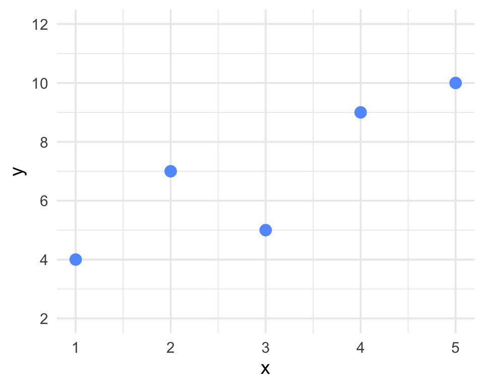
Figure 9.12: Scatterplot of five observations. Which regression equation best fits these data?
Four candidate regression equations are listed below. Which one is the least-squares regression line for the data shown? Explain how you identified the correct equation.
\(\hat{y} = 2.8 + 1.4x\)
\(\hat{y} = 2.8 - 1.4x\)
\(\hat{y} = 1.4 + 2.8x\)
\(\hat{y} = 7.0 + 1.4x\)
💡 Hint
- The scatter shows a positive trend, so the slope must be positive. This rules out one option immediately.
- The least-squares line passes through \((\bar{x}, \bar{y})\). Compute these from the five points, then check which equation satisfies \(\hat{y} = \bar{y}\) when \(x = \bar{x}\).
✅ Answer
(A) is correct: \(\hat{y} = 2.8 + 1.4x\).
Verification. From the five points: \(\bar{x} = 3\) and \(\bar{y} = 7\).
\[S_{xx} = 10, \quad S_{xy} = (-2)(-3)+(-1)(0)+(0)(-2)+(1)(2)+(2)(3) = 14\]
\[\hat{\beta}_1 = 14/10 = 1.4, \qquad \hat{\beta}_0 = 7 - 1.4(3) = 2.8\]
Ruling out the others:
- (B) has a negative slope, but the scatter shows a positive trend.
- (C) has slope 2.8, which is too steep; plugging \(x = \bar{x} = 3\) gives \(\hat{y} = 9.8 \neq \bar{y} = 7\).
- (D) has intercept \(7.0\); at \(x = 3\) it gives \(\hat{y} = 11.2 \neq 7\).
Question 23
Five observations on two variables are recorded:
| \(x_i\) | 1 | 3 | 5 | 7 | 9 |
|---|---|---|---|---|---|
| \(y_i\) | 3 | 7 | 8 | 11 | 16 |
Compute the sample means \(\bar{x}\) and \(\bar{y}\), the sample standard deviations \(s_x\) and \(s_y\), and the sample covariance \(s_{xy}\).
Compute the sample correlation coefficient \(r_{xy}\) and interpret its value.
Using the relationship \(\hat{\beta}_1 = r_{xy}\,(s_y/s_x)\), find the slope and intercept of the least-squares line.
💡 Hint
- \(s_{xy} = \dfrac{1}{n-1}\sum_{i=1}^n (x_i - \bar{x})(y_i - \bar{y})\)
- \(r_{xy} = s_{xy}/(s_x \cdot s_y)\), and \(r_{xy}\) is always between \(-1\) and \(+1\).
- Then use \(\hat{\beta}_0 = \bar{y} - \hat{\beta}_1\bar{x}\).
✅ Answer
(a) \(\bar{x} = 5\), \(\bar{y} = 9\).
\[s_x^2 = \frac{(-4)^2+(-2)^2+0^2+2^2+4^2}{4} = \frac{40}{4} = 10 \quad\Rightarrow\quad s_x = \sqrt{10} \approx 3.162\]
\[s_y^2 = \frac{(-6)^2+(-2)^2+(-1)^2+2^2+7^2}{4} = \frac{94}{4} = 23.5 \quad\Rightarrow\quad s_y = \sqrt{23.5} \approx 4.848\]
\[s_{xy} = \frac{(-4)(-6)+(-2)(-2)+(0)(-1)+(2)(2)+(4)(7)}{4} = \frac{60}{4} = 15\]
(b) \(r_{xy} = 15/(\sqrt{10}\cdot\sqrt{23.5}) = 15/\sqrt{235} \approx 0.978\).
There is a very strong positive linear association between \(x\) and \(y\).
(c) \(\hat{\beta}_1 = 0.978 \times (4.848/3.162) \approx 0.978 \times 1.533 \approx 1.500\).
\(\hat{\beta}_0 = 9 - 1.500(5) = 1.5\).
Fitted line: \(\hat{y} = 1.5 + 1.5x\).
(Slight rounding differences may occur; using the exact formula \(\hat{\beta}_1 = S_{xy}/S_{xx}\) with \(S_{xy} = 60\) and \(S_{xx} = 40\) gives \(\hat{\beta}_1 = 1.5\) exactly.)
Question 24
A transportation researcher records the number of traffic signals encountered (\(x\)) and travel time (\(y\), minutes) for 20 trips through a city. The following summary statistics are available:
\[\bar{x} = 8, \quad \bar{y} = 22, \quad s_x = 3, \quad s_y = 6, \quad r = 0.85\]
Use the formula \(\hat{\beta}_1 = r\,(s_y/s_x)\) to compute the slope of the least-squares regression line.
Find the intercept \(\hat{\beta}_0\).
Write the fitted equation and predict the travel time for a trip that encounters 10 traffic signals.
Interpret \(\hat{\beta}_1\) in context.
💡 Hint
- \(\hat{\beta}_1 = r \cdot (s_y / s_x)\); the ratio \(s_y/s_x\) converts the correlation to the scale of the data.
- \(\hat{\beta}_0 = \bar{y} - \hat{\beta}_1\bar{x}\).
✅ Answer
(a) \(\hat{\beta}_1 = 0.85 \times (6/3) = 0.85 \times 2 = 1.70\)
(b) \(\hat{\beta}_0 = 22 - 1.70(8) = 22 - 13.6 = 8.4\)
(c) \(\hat{y} = 8.4 + 1.70x\). At \(x = 10\): \(\hat{y} = 8.4 + 17.0 = 25.4\) minutes.
(d) For each additional traffic signal encountered, the predicted travel time increases by 1.70 minutes on average.
Question 25
A biologist models body weight (\(y\), grams) from body length (\(x\), centimetres) for a lizard species and obtains:
\[\hat{y} = -8.4 + 3.2x\]
A colleague re-expresses all length measurements in millimetres (\(x' = 10x\), where \(x'\) is length in mm). Write the fitted regression equation in terms of \(x'\).
A different colleague converts the response to kilograms (\(y^* = y/1000\)). Write the new fitted equation in terms of \(x\) (still in cm) and \(y^*\) (in kg).
Which unit conversion — rescaling \(x\) or rescaling \(y\) — leaves the intercept \(\hat{\beta}_0\) unchanged? Explain briefly.
💡 Hint
- If \(x' = cx\) (scaling \(x\) by factor \(c\)), substitute \(x = x'/c\) into the original equation.
- If \(y^* = y/c\) (scaling \(y\) by factor \(c\)), divide the entire equation by \(c\).
✅ Answer
(a) Since \(x' = 10x\), we have \(x = x'/10\). Substituting:
\[\hat{y} = -8.4 + 3.2\!\left(\frac{x'}{10}\right) = -8.4 + 0.32\,x'\]
The slope becomes \(0.32\) g/mm; the intercept \(-8.4\) g is unchanged.
(b) Since \(y^* = y/1000\):
\[\hat{y}^* = \frac{-8.4 + 3.2x}{1000} = -0.0084 + 0.0032\,x\]
Both the slope (now \(0.0032\) kg/cm) and the intercept (now \(-0.0084\) kg) change.
(c) Rescaling \(x\) leaves the intercept unchanged because the intercept is the predicted value of \(y\) when \(x = 0\), and changing the scale of \(x\) does not change the value of the response at \(x = 0\). By contrast, rescaling \(y\) multiplies every fitted value — including the intercept — by the same factor.
Question 26
A study of 30 students produces the following fitted regression of exam score (\(y\), out of 100) on hours studied (\(x\)):
\[\hat{y} = 42.5 + 3.6x, \quad R^2 = 0.64\]
Four students make the claims below. For each, state whether the claim is correct or incorrect, and explain.
“Since \(R^2 = 0.64\), the slope of the regression line must be \(0.64\).”
“The sample correlation coefficient is \(r = 0.64\).”
“64% of the variation in exam scores is explained by the linear relationship with study hours.”
“A student who studies one more hour will always score 3.6 points higher.”
💡 Hint
- \(R^2\) and the slope are different quantities with different interpretations.
- \(r = \pm\sqrt{R^2}\); the sign is determined by the sign of \(\hat{\beta}_1\).
- The slope describes the average change, not a guaranteed change for every individual.
✅ Answer
(A) Incorrect. \(R^2 = 0.64\) is the coefficient of determination (proportion of variance explained). The slope \(\hat{\beta}_1 = 3.6\) is an entirely separate quantity measured in units of score per hour.
(B) Incorrect. Since \(\hat{\beta}_1 = 3.6 > 0\), the correlation is positive. Thus \(r = +\sqrt{R^2} = +\sqrt{0.64} = 0.8\), not \(0.64\).
(C) Correct. This is the standard interpretation of \(R^2\): the proportion of total variation in \(y\) that is explained by the linear regression.
(D) Incorrect. The slope \(3.6\) describes the predicted (average) increase per additional study hour. Because of random variation (the error term \(\varepsilon\)), individual exam scores may be higher or lower than predicted; there is no guarantee every student gains exactly \(3.6\) points.
Question 27
A researcher fits a simple linear regression model and produces the residuals-vs-fitted plot shown in Figure 9.13.
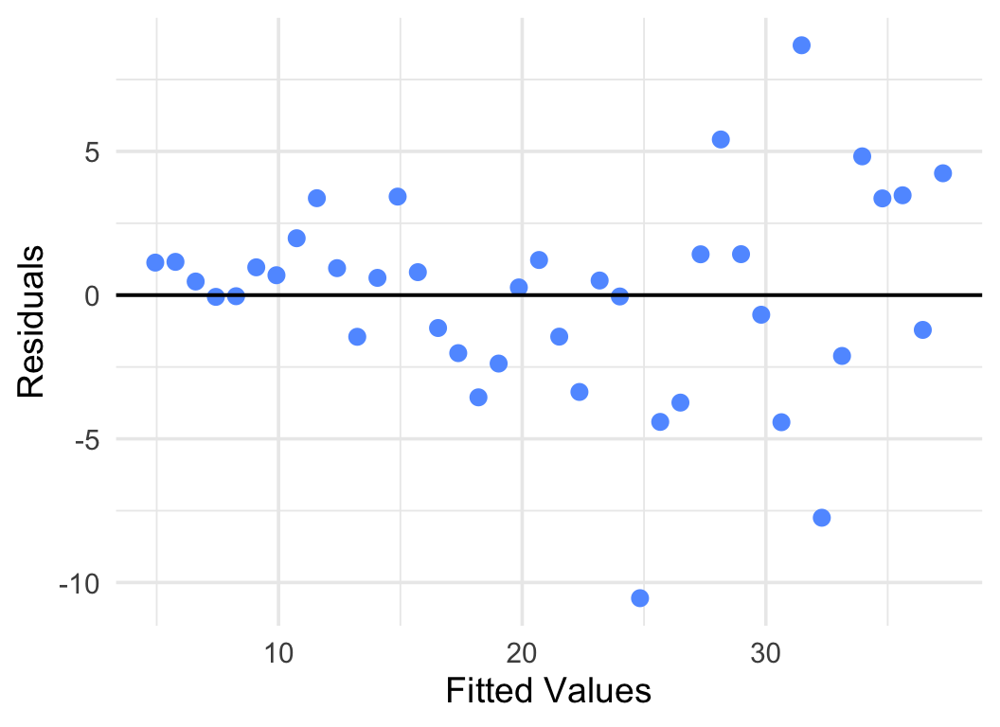
Figure 9.13: Residuals-vs-fitted plot from a fitted simple linear regression model.
Describe the pattern you observe in Figure 9.13.
Which regression assumption does this pattern indicate is violated? Explain.
What consequence does this violation have for inference (e.g., confidence intervals and hypothesis tests) based on the fitted model?
💡 Hint
- If the model assumptions hold, the residuals should scatter randomly in a horizontal band of roughly constant width around zero.
- A fan shape (spread increasing with fitted values) signals a specific assumption violation.
✅ Answer
(a) The residuals spread outward as the fitted values increase — the plot has a clear fan or funnel shape, with small variability at low fitted values and much larger variability at high fitted values.
(b) This pattern indicates a violation of the constant variance (homoscedasticity) assumption: \(\text{Var}(\varepsilon_i) = \sigma^2\) for all \(i\). Instead, the error variance appears to increase with the fitted value (or equivalently, with \(x\)).
(c) Standard confidence intervals and p-values for the slope (and intercept) rely on the assumption of constant variance. When this assumption is violated, the usual formulas for \(\text{SE}(\hat{\beta}_1)\) underestimate the true standard error at large fitted values and overestimate it at small fitted values, making intervals and test conclusions unreliable.
Question 28
The R output below is from a regression of tomato yield (kg/plant) on sunlight (hours/day) for 18 plants.
Call:
lm(formula = yield ~ sunlight)
Coefficients:
Estimate Std. Error t value Pr(>|t|)
(Intercept) 0.4800 0.3120 1.538 0.1430
sunlight 0.5900 0.0475 12.421 1.8e-10 ***
---
Signif. codes: 0 '***' 0.001 '**' 0.01 '*' 0.05 '.' 0.1 ' ' 1
Residual standard error: 0.321 on 16 degrees of freedom
Multiple R-squared: 0.9061, Adjusted R-squared: 0.9002
F-statistic: 154.3 on 1 and 16 DF, p-value: 1.8e-10Write the fitted regression equation.
What is \(\hat{\sigma}\)? What does it estimate, and what are its units?
State the hypotheses tested by the \(t\)-test for
sunlight, report the \(t\)-statistic and p-value, and state your conclusion at \(\alpha = 0.05\).Interpret \(\hat{\beta}_1\) in context.
Interpret \(R^2\) in context.
💡 Hint
- The “Residual standard error” in R output is \(\hat{\sigma} = \sqrt{\text{SSE}/(n-2)}\).
- The \(t\)-test for each coefficient tests \(H_0: \beta_j = 0\) vs \(H_a: \beta_j \neq 0\) (two-sided) by default.
- Degrees of freedom for residuals = \(n - 2\); read \(n\) from the df line.
✅ Answer
(a) \(\hat{\text{yield}} = 0.480 + 0.590 \times \text{sunlight}\)
(b) \(\hat{\sigma} = 0.321\) kg/plant. It estimates the standard deviation \(\sigma\) of the error terms — the typical size of deviations of individual yields from the fitted line.
(c) \[H_0: \beta_1 = 0 \quad\text{vs}\quad H_a: \beta_1 \neq 0\] \(t = 12.421\), p-value \(= 1.8 \times 10^{-10} < 0.05\). We reject \(H_0\). There is very strong evidence that daily sunlight hours is a significant linear predictor of yield.
(d) Each additional hour of sunlight per day is associated with an average increase of \(0.590\) kg in tomato yield per plant.
(e) \(R^2 = 0.9061\): approximately 90.6% of the variation in tomato yield is explained by the linear relationship with daily sunlight hours — an excellent fit.
Question 29
Two researchers each fit a simple linear regression model to predict student GPA (on a 4.0 scale) using the same dataset of \(n = 32\) students. Their results are:
| Model 1 | Model 2 | |
|---|---|---|
| Predictor | Hours studied per week | Number of absences |
| \(\hat{\beta}_1\) | \(0.12\) | \(-0.18\) |
| \(R^2\) | \(0.61\) | \(0.29\) |
| \(\hat{\sigma}\) | \(0.42\) | \(0.57\) |
| SSE | \(5.30\) | \(9.66\) |
Which model explains more of the variation in GPA? How do you know?
Which model produces smaller residuals on average? How do you know?
A student claims: “Both \(R^2\) values are less than 1, so neither model is any good.” Is this a reasonable conclusion? Explain.
If you had to choose one of these two models for prediction purposes, which would you choose, and why?
💡 Hint
- A higher \(R^2\) means more variation is explained by the model.
- \(\hat{\sigma}\) is the estimated standard deviation of the residuals — smaller means tighter predictions.
- \(R^2\) is relative: even a moderate \(R^2\) may be useful in practice.
✅ Answer
(a) Model 1 explains more variation: \(R^2 = 0.61\) vs \(R^2 = 0.29\).
(b) Model 1 produces smaller residuals on average: \(\hat{\sigma} = 0.42\) vs \(\hat{\sigma} = 0.57\). (Equivalently, Model 1 has a smaller SSE: \(5.30\) vs \(9.66\).)
(c) Not a reasonable conclusion. An \(R^2\) less than 1 simply means the model does not explain all variability in GPA — which is expected, since GPA is influenced by many factors beyond a single predictor. Whether a model is “good” depends on context and purpose; \(R^2 = 0.61\) is often considered a reasonable fit for behavioral data.
(d) Model 1. It has higher \(R^2\), lower \(\hat{\sigma}\), and lower SSE, so it produces more accurate predictions of GPA.
Question 30
Figure 9.14 shows a scatterplot of seven observations together with two candidate regression lines, Line 1 and Line 2.
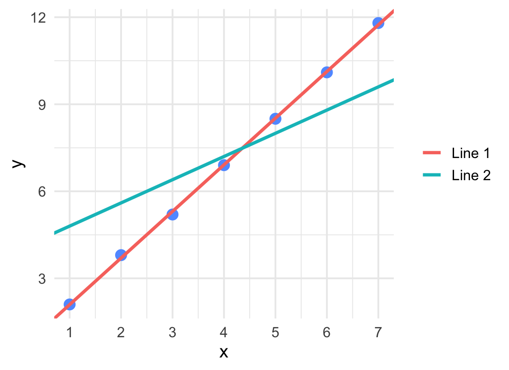
Figure 9.14: Scatterplot with two candidate regression lines.
Without computing anything, use the graph to identify which line appears to be the better fit. Explain your reasoning.
The equations of the two lines are: \[\text{Line 1: } \hat{y} = 0.49 + 1.61x \qquad \text{Line 2: } \hat{y} = 4.00 + 0.80x\] Compute the residual for the observation at \(x = 1\) (\(y = 2.1\)) under each line. Which residual has smaller magnitude?
Which of Line 1 or Line 2 is the least-squares regression line? How do you know?
💡 Hint
- The least-squares line minimises the sum of squared residuals (SSE).
- Visually, the better-fitting line will pass closer to most of the plotted points.
- Residual = observed \(-\) predicted; a large residual means the line misses that point badly.
✅ Answer
(a) Line 1 appears to be the better fit. It runs through the middle of the point cloud from lower-left to upper-right, staying close to all seven points. Line 2 is too flat and positioned too high, crossing above the smaller \(y\)-values and below the larger \(y\)-values.
(b) At \(x = 1\), \(y = 2.1\):
Line 1: \(\hat{y} = 0.49 + 1.61(1) = 2.10\); residual \(= 2.1 - 2.1 = 0.00\)
Line 2: \(\hat{y} = 4.00 + 0.80(1) = 4.80\); residual \(= 2.1 - 4.8 = -2.70\)
Line 1 has a much smaller residual magnitude at this point.
(c) Line 1 is the least-squares regression line. The least-squares criterion minimises SSE, and Line 1 produces residuals close to zero for all seven observations while Line 2 produces large residuals (especially at the smallest and largest \(x\)-values). Line 1 was computed directly using \(\hat{\beta}_1 = S_{xy}/S_{xx} = 45/28 \approx 1.607\).
Question 31
A regression model predicting monthly rent (\(y\), $/month) from apartment floor area (\(x\), in hundreds of sq ft) was fitted using data from apartments with areas ranging from \(x = 8\) to \(x = 20\) (i.e., 800 to 2000 sq ft). The fitted equation is:
\[\hat{y} = 800 + 40x\]
Classify each of the following predictions as interpolation or extrapolation, and briefly explain.
Predicting rent for \(x = 12\) (1200 sq ft).
Predicting rent for \(x = 25\) (2500 sq ft).
Predicting rent for \(x = 4\) (400 sq ft).
Predicting rent for \(x = 18\) (1800 sq ft).
For which of (a)–(d) should the prediction be used most cautiously? Why?
💡 Hint
- Interpolation: the \(x\)-value used for prediction lies within the range of the training data \([8, 20]\).
- Extrapolation: the \(x\)-value lies outside the range \([8, 20]\).
✅ Answer
(a) \(x = 12 \in [8, 20]\): Interpolation. The prediction is within the observed data range and can be trusted (assuming the linear model is appropriate).
(b) \(x = 25 > 20\): Extrapolation. This is beyond the largest observed apartment. The linear trend may not hold at such large areas.
(c) \(x = 4 < 8\): Extrapolation. This is below the smallest observed apartment. Very small units may follow a different pricing structure.
(d) \(x = 18 \in [8, 20]\): Interpolation.
(e) The predictions in (b) and (c) should be used most cautiously because they involve extrapolation. Among these, (b) extends farthest beyond the observed range relative to the data (\(x = 25\) is \(25\%\) above the upper boundary), so prediction (b) carries the most risk of being inaccurate.
Question 32
A survey of 40 university students measures the average daily hours spent on social media (\(x\)) and semester GPA (\(y\)). The sample correlation between \(x\) and \(y\) is \(r = -0.60\).
Compute \(R^2\) and provide a one-sentence interpretation.
What is the sign of \(\hat{\beta}_1\)? Explain how you know.
A classmate claims: “Since \(r = -0.60\), the coefficient of determination \(R^2 = -0.60\).” Is this correct? Explain.
Another student says: “Because \(r\) is negative, \(R^2\) must also be negative.” Is this correct?
💡 Hint
- \(R^2 = r^2\); squaring always gives a non-negative result.
- The sign of \(\hat{\beta}_1\) equals the sign of \(r\) (from \(\hat{\beta}_1 = r\,s_y/s_x\) and \(s_x, s_y > 0\)).
✅ Answer
(a) \(R^2 = (-0.60)^2 = 0.36\). About 36% of the variation in GPA is explained by the linear relationship with daily social media use.
(b) The sign of \(\hat{\beta}_1\) is negative (same as \(r = -0.60\)), since \(\hat{\beta}_1 = r\,(s_y/s_x)\) and \(s_y/s_x > 0\).
(c) Incorrect. \(R^2 = r^2 = (-0.60)^2 = 0.36\), not \(-0.60\). The coefficient of determination is always between 0 and 1.
(d) Incorrect. \(R^2 = r^2 \geq 0\) always, regardless of the sign of \(r\). Squaring a negative number yields a positive number.
Question 33
A health researcher records the weekly exercise hours (\(x\), from 1 to 10 hours per week) and a composite well-being score (\(y\), on a 0–10 scale) for ten participants.
| \(x\) (hours/week) | 1 | 2 | 3 | 4 | 5 | 6 | 7 | 8 | 9 | 10 |
|---|---|---|---|---|---|---|---|---|---|---|
| \(y\) (well-being) | 4.23 | 4.80 | 6.60 | 7.96 | 8.61 | 9.14 | 9.98 | 9.43 | 8.98 | 8.88 |
A simple linear regression of \(y\) on \(x\) was fitted, giving \(\hat{\beta}_0 = 4.80\) and \(\hat{\beta}_1 = 0.557\). Figure 9.15 shows the scatterplot with the fitted regression line (a) and the residual plot (residuals vs. fitted values) (b).
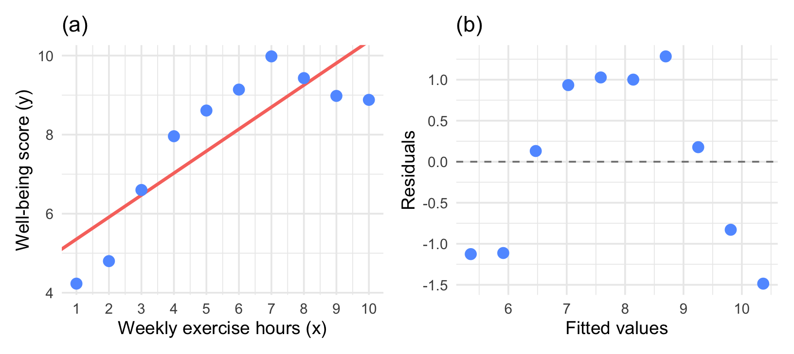
Figure 9.15: (a) Scatterplot of well-being score (\(y\)) against weekly exercise hours (\(x\)) with the fitted regression line. (b) Residual plot: residuals plotted against fitted values; the dashed line marks zero.
Examine Panel (a). Describe the shape of the relationship between \(y\) and \(x\). Based on the scatterplot alone, does a simple linear model appear fully appropriate? Explain briefly.
Examine Panel (b). Describe the pattern you observe in the residuals. Which assumption of simple linear regression does this pattern suggest may be violated?
The fitted model has \(\text{SST} = 35.59\) and \(\text{SSE} = 10.03\). Compute \(R^2\) and write a one-sentence interpretation in context.
Given \(\hat{\beta}_1 = 0.557\) and \(\text{SE}(\hat{\beta}_1) = 0.123\), test \(H_0\colon \beta_1 = 0\) versus \(H_1\colon \beta_1 \neq 0\) at \(\alpha = 0.05\). State the test statistic, the approximate \(p\)-value (use \(df = 8\)), and your conclusion.
A classmate argues: “Since \(R^2 = 0.72\) and the slope is significant at \(\alpha = 0.05\), the linear model fits these data well.” Using evidence from both panels of Figure 9.15, explain whether you agree or disagree.
💡 Hint
- (a) Look carefully at whether the data follows a straight line or whether there is curvature (does the data rise then fall, or steadily increase throughout?).
- (b) A systematic curved pattern in the residual plot — rather than random scatter — signals a violation of the linearity assumption.
- (c) \(R^2 = 1 - \dfrac{\text{SSE}}{\text{SST}}\).
- (d) \(t = \hat{\beta}_1 / \text{SE}(\hat{\beta}_1)\). Compare \(|t|\) to \(t_{0.025,\,8} \approx 2.306\).
- (e) A significant slope and a high \(R^2\) tell you that \(x\) is a useful linear predictor — but they do not confirm that a linear model is the correct form. The residual plot provides additional diagnostic information.
✅ Answer
(a) The data shows an inverted-U (arch) shape: well-being scores rise from \(x = 1\) to approximately \(x = 7\), then decline for \(x = 8, 9, 10\). A straight line cannot capture this pattern, so a simple linear model does not appear fully appropriate. The curvature visible in the scatterplot suggests the true relationship may be quadratic (or otherwise non-linear).
(b) The residuals show an inverted-U pattern: they are negative at small fitted values (low \(x\)), positive in the middle range, and negative again at large fitted values (high \(x\)). This systematic arch — rather than random scatter around zero — suggests that the linearity assumption is violated: the true relationship between \(x\) and \(y\) is curved, not linear.
(c) \[R^2 = 1 - \frac{\text{SSE}}{\text{SST}} = 1 - \frac{10.03}{35.59} = 1 - 0.282 = 0.718.\] About 71.8% of the variability in well-being scores is explained by the linear relationship with weekly exercise hours.
(d) Test statistic: \[t = \frac{\hat{\beta}_1}{\text{SE}(\hat{\beta}_1)} = \frac{0.557}{0.123} \approx 4.53.\] With \(df = 8\) and \(|t| = 4.53 > t_{0.025,\,8} \approx 2.306\), the \(p\)-value \(\approx 0.002 < 0.05\). We reject \(H_0\): there is statistically significant evidence of a linear relationship between exercise hours and well-being score.
(e) Disagree. Although \(R^2 = 0.72\) and the slope is statistically significant (\(p \approx 0.002\)), these measures only confirm that \(x\) is a useful linear predictor — they do not imply the linear model is appropriate. Panel (a) shows a clear arch in the data, and Panel (b) reveals a systematic curved pattern in the residuals. Both indicate the linearity assumption is violated. A quadratic or other non-linear model would be more suitable for these data. A high \(R^2\) and a significant \(t\)-test cannot substitute for residual diagnostics when assessing model adequacy.
Question 34
Figure 9.16 shows a scatterplot of seven observations with the fitted regression line. The point labelled P is at \((4,\; 14)\).
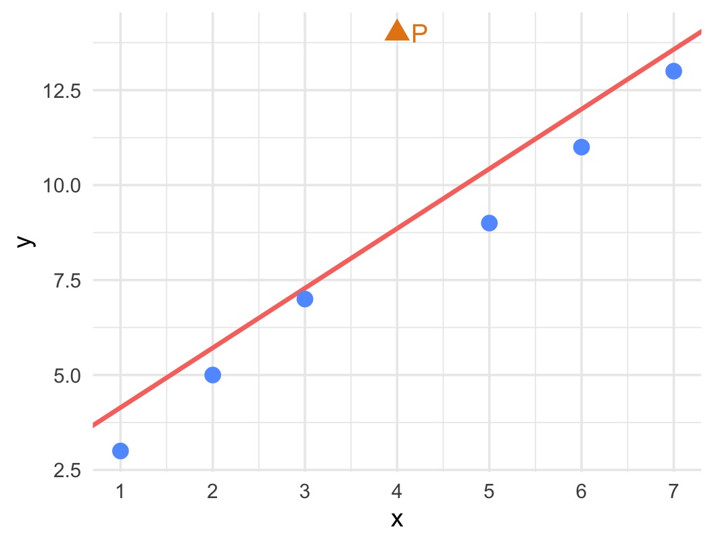
Figure 9.16: Scatterplot with the fitted regression line. Point P is highlighted.
Is point P above or below the fitted regression line? Use this to determine the sign of the residual \(e_P = y_P - \hat{y}_P\).
The fitted regression equation is \(\hat{y} = 2.571 + 1.571x\). Compute the residual \(e_P\) exactly.
If point P were instead at \((4,\; 8)\), would its residual be positive or negative?
💡 Hint
- Residual = observed \(y\) \(-\) fitted \(\hat{y}\). Points above the line have positive residuals; points below have negative residuals.
- Compute \(\hat{y}\) at \(x = 4\) using the given equation.
✅ Answer
(a) Point P is above the fitted regression line, so the residual is positive (\(e_P > 0\)).
(b) \(\hat{y}_P = 2.571 + 1.571(4) = 2.571 + 6.284 = 8.855\)
\[e_P = 14.0 - 8.855 = 5.145\]
(c) At \((4,\; 8)\): \(\hat{y} = 8.855\), so residual \(= 8 - 8.855 = -0.855 < 0\). The residual would be negative because the point is below the fitted line.
Question 35
For each of the following scenarios, state whether the slope \(\hat{\beta}_1\) of a fitted simple linear regression should be positive or negative. Also state whether the intercept \(\hat{\beta}_0\) has a meaningful practical interpretation in context. Briefly justify each answer.
Response \(y\) = number of words recalled in a memory test; predictor \(x\) = age (years) among participants aged 65–85.
Response \(y\) = fuel efficiency (km per litre); predictor \(x\) = engine displacement (litres) for passenger vehicles.
Response \(y\) = seedling height (cm) measured at 4 weeks; predictor \(x\) = amount of fertiliser applied at planting (grams per pot).
💡 Hint
- The sign of the slope reflects the direction of the relationship: does \(y\) tend to increase or decrease as \(x\) increases?
- The intercept is interpretable when \(x = 0\) is a realistic value within or near the data range.
✅ Answer
(a) Negative slope. Cognitive recall tends to decline with increasing age in elderly participants. The intercept at \(x = 0\) (age = 0 years) has no practical meaning — no participant is aged 0.
(b) Negative slope. Larger engines consume more fuel, resulting in lower fuel efficiency. The intercept at \(x = 0\) litres of engine displacement is not physically meaningful (there is no car with zero engine size).
(c) Positive slope. Up to a point, more fertiliser promotes plant growth, so height tends to increase with fertiliser amount. The intercept at \(x = 0\) grams (no fertiliser) is practically meaningful — it represents the predicted seedling height when no fertiliser is applied, which is a realistic condition.
Question 36
A simple linear regression model is fitted to \(n = 27\) observations and produces the following:
\[\text{SST} = 3600, \qquad \text{SSR} = 2880\]
Find SSE.
Compute \(R^2\) and interpret it.
Compute the estimated error variance \(\hat{\sigma}^2 = s^2\).
Compute the regression standard error \(\hat{\sigma} = s\).
💡 Hint
- \(\text{SST} = \text{SSR} + \text{SSE}\)
- \(R^2 = \text{SSR}/\text{SST}\)
- \(s^2 = \text{SSE}/(n - 2)\) with degrees of freedom \(n - 2 = 25\)
✅ Answer
(a) \(\text{SSE} = \text{SST} - \text{SSR} = 3600 - 2880 = 720\)
(b) \(R^2 = 2880/3600 = 0.80\). About 80% of the variation in \(y\) is explained by the linear regression on \(x\).
(c) \(s^2 = \text{SSE}/(n - 2) = 720/25 = 28.8\)
(d) \(s = \sqrt{28.8} \approx 5.37\)
Question 37
Figure 9.17 was produced from a dataset in which daily high temperature (\(x\), °C) was recorded along with the number of visitors to an outdoor swimming pool (\(y\)). The vertical dashed lines mark the range of \(x\) values in the training data (\(x = 15\) to \(x = 35\)). The fitted regression line is extended beyond this range. Points A and B show two predictions made using the fitted line.
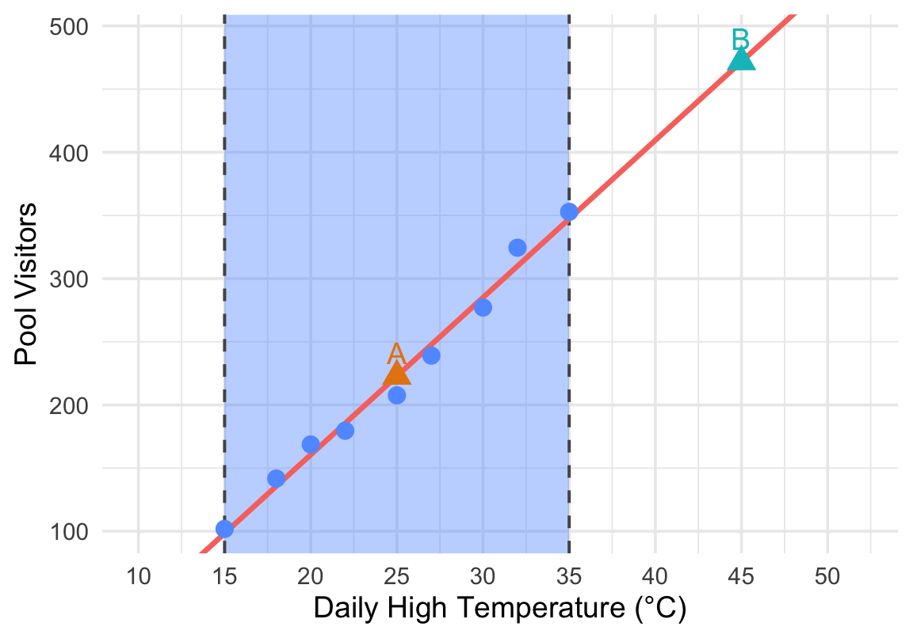
Figure 9.17: Fitted regression line extended beyond the observed data range. Vertical dashed lines indicate the range of the training data.
Is the prediction at Point A (at \(x = 25\)) interpolation or extrapolation?
Is the prediction at Point B (at \(x = 45\)) interpolation or extrapolation?
Which prediction — A or B — should be treated with greater caution, and why?
A manager uses Point B’s predicted value to plan weekend staffing for a heat-wave day forecast at 45°C. Identify one specific risk in relying on this prediction.
💡 Hint
- Compare the \(x\)-values of A and B against the shaded data range shown by the dashed lines.
- Extrapolation assumes the linear trend continues outside the data range — this may not hold.
✅ Answer
(a) Point A at \(x = 25\): Interpolation — 25°C is within the observed data range \([15, 35]\) (inside the shaded region).
(b) Point B at \(x = 45\): Extrapolation — 45°C is well outside the upper boundary of the training data.
(c) Point B should be treated with greater caution. Extrapolation assumes the linear relationship continues unchanged beyond the data range, which may not be true. There may be capacity limits (e.g., maximum pool capacity), nonlinear behaviour, or other factors that cause the actual visitor count at 45°C to deviate substantially from the linear prediction.
(d) One risk: at extreme temperatures (45°C), heat-safety advisories might actually reduce visitor numbers, or the pool may have a fixed maximum capacity. The linear model has no information about the response at 45°C, so the prediction could be severely inaccurate — leading to overstaffing or understaffing.
Question 38
A developmental psychologist studying children aged 4–12 finds a strong positive correlation between shoe size (\(x\)) and reading vocabulary (\(y\)): \(r = 0.81\), p-value \(< 0.001\). The fitted regression line is:
\[\hat{y} = 12 + 18x\]
After seeing this output, a colleague concludes:
“Since the p-value is less than 0.001, we have overwhelming evidence that wearing larger shoes causes children to develop larger reading vocabularies. Parents should buy children shoes one size larger than needed to boost reading skills.”
Identify two specific problems or errors in this conclusion.
What is the most likely explanation for the strong association between shoe size and vocabulary?
Suppose the researcher controlled for age by comparing children of the same age. What would you expect to happen to the correlation between shoe size and vocabulary?
💡 Hint
- A statistically significant result means we can reject \(H_0: \beta_1 = 0\), but it does not establish causation.
- Think about what changes as children age from 4 to 12 years.
✅ Answer
(a) Two problems:
Correlation does not imply causation. A significant p-value only means the slope is unlikely to be zero — it does not mean shoe size causes vocabulary growth. The regression describes an association, not a mechanism.
The conclusion proposes a nonsensical intervention. Even if the association were causal, the practical advice (“buy larger shoes”) does not follow from the regression, which merely describes an observational relationship.
(b) Age is a confounding variable. Both shoe size and reading vocabulary increase as children grow older. Older children have larger feet and larger vocabularies — but neither causes the other. The observed correlation reflects their shared dependence on age (and developmental maturity), not a direct link.
(c) After controlling for age (i.e., comparing children of the same age), the correlation between shoe size and vocabulary would be expected to decrease substantially, likely approaching zero. Once age is held constant, both shoe size and vocabulary vary much less and are no longer systematically related to each other.
Question 39
A home energy analyst records the outdoor temperature (\(x\), °C) and daily gas consumption (\(y\), units) for a residential heating system over 5 winter days:
| Day | Temperature (\(x\)) | Gas (\(y\)) |
|---|---|---|
| 1 | 1 | 20 |
| 2 | 2 | 16 |
| 3 | 3 | 13 |
| 4 | 4 | 9 |
| 5 | 5 | 7 |
Compute \(\bar{x}\), \(\bar{y}\), \(S_{xx}\), and \(S_{xy}\). Find \(\hat{\beta}_1\) and \(\hat{\beta}_0\), and write the fitted regression equation.
Interpret \(\hat{\beta}_1\) in the context of home energy use.
Compute the residual for Day 3.
Compute SSE and \(\hat{\sigma}^2\).
Predict the daily gas consumption on a day when the outdoor temperature is \(6\)°C. Is this prediction an example of interpolation or extrapolation?
💡 Hint
- \(S_{xx} = \sum(x_i - \bar{x})^2\), \(S_{xy} = \sum(x_i - \bar{x})(y_i - \bar{y})\)
- \(\hat{\sigma}^2 = \text{SSE}/(n - 2)\); note \(n = 5\), so \(n - 2 = 3\).
- Compare \(x = 6\) against the observed range \([1, 5]\) to classify the prediction.
✅ Answer
(a) \(\bar{x} = 3\), \(\bar{y} = 13\)
\[S_{xx} = (-2)^2+(-1)^2+0^2+1^2+2^2 = 10\] \[S_{xy} = (-2)(7)+(-1)(3)+(0)(0)+(1)(-4)+(2)(-6) = -14-3+0-4-12 = -33\] \[\hat{\beta}_1 = -33/10 = -3.3, \qquad \hat{\beta}_0 = 13-(-3.3)(3) = 22.9\]
Fitted equation: \(\hat{y} = 22.9 - 3.3x\)
(b) For each 1°C increase in outdoor temperature, the predicted daily gas consumption decreases by 3.3 units on average. On warmer days, the heating system uses less gas.
(c) Day 3: \(\hat{y} = 22.9 - 3.3(3) = 13.0\); residual \(= 13 - 13.0 = 0\).
(d) Computing all residuals:
| Day | \(y\) | \(\hat{y}\) | \(e_i\) | \(e_i^2\) |
|---|---|---|---|---|
| 1 | 20 | 19.6 | 0.4 | 0.16 |
| 2 | 16 | 16.3 | −0.3 | 0.09 |
| 3 | 13 | 13.0 | 0 | 0.00 |
| 4 | 9 | 9.7 | −0.7 | 0.49 |
| 5 | 7 | 6.4 | 0.6 | 0.36 |
\(\text{SSE} = 0.16+0.09+0+0.49+0.36 = 1.10\)
\(\hat{\sigma}^2 = 1.10/3 \approx 0.367\)
(e) \(\hat{y} = 22.9 - 3.3(6) = 3.1\) units. Since \(x = 6\) lies outside the observed range \([1, 5]\), this is extrapolation and should be used with caution.
Question 40
Figure 9.18 shows a scatterplot with the fitted regression line \(\hat{y} = 3 + 2x\) annotated on the plot. Four data points are labelled A, B, C, and D. Their coordinates are:
- A = \((2,\; 10)\)
- B = \((4,\; 6)\)
- C = \((5,\; 13)\)
- D = \((7,\; 17)\)
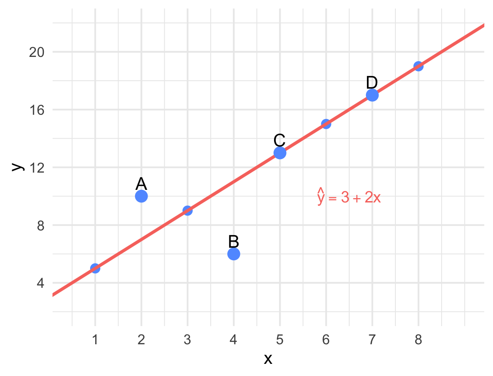
Figure 9.18: Scatterplot with the fitted regression line \(\hat{y} = 3 + 2x\). Four labelled points are shown.
For each of the four labelled points A–D, compute the fitted value \(\hat{y}\) and the residual \(e = y - \hat{y}\).
State the sign (positive, negative, or zero) of the residual for each point, and confirm by looking at whether the point lies above, below, or on the line.
Which point contributes the most to SSE? Compute its contribution \(e^2\).
Point A currently lies at \((2,\; 10)\). To what \(y\)-value would A need to be moved so that its residual equals exactly zero?
💡 Hint
- Fitted value: \(\hat{y} = 3 + 2x\).
- Residual \(e = y - \hat{y}\): positive if the point is above the line, negative if below, zero if on the line.
- To make the residual zero, the observed \(y\) must equal the fitted \(\hat{y}\).
✅ Answer
(a) Using \(\hat{y} = 3 + 2x\):
| Point | \(x\) | \(y\) | \(\hat{y}\) | \(e = y - \hat{y}\) |
|---|---|---|---|---|
| A | 2 | 10 | \(3+4=7\) | \(+3\) |
| B | 4 | 6 | \(3+8=11\) | \(-5\) |
| C | 5 | 13 | \(3+10=13\) | \(0\) |
| D | 7 | 17 | \(3+14=17\) | \(0\) |
(b)
- A: residual \(= +3\) (positive — A is above the line).
- B: residual \(= -5\) (negative — B is well below the line).
- C: residual \(= 0\) (zero — C lies on the line).
- D: residual \(= 0\) (zero — D lies on the line).
(c) Point B contributes the most to SSE: \(e_B^2 = (-5)^2 = 25\).
(d) For A’s residual to be zero, we need \(y_A = \hat{y}_A = 3 + 2(2) = 7\). Point A would need to be moved down to \((2,\; 7)\).